<!doctype html>
<html lang="en">
<head>
  <meta charset="utf-8">
  <meta name="viewport" content="width=device-width, initial-scale=1">
  <title>arxiv digest — 2026-09-25</title>
  <style>
:root {
  --bg: #ffffff;
  --fg: #1f2328;
  --muted: #59636e;
  --border: #d0d7de;
  --card: #f6f8fa;
  --link: #0969da;
}
body {
  max-width: 980px;
  margin: 0 auto;
  padding: 2rem 1rem 5rem;
  font-family: -apple-system, BlinkMacSystemFont, "Segoe UI", Helvetica, Arial, sans-serif;
  line-height: 1.55;
  color: var(--fg);
  background: var(--bg);
}
a { color: var(--link); }
img { max-width: 100%; height: auto; }
pre, code { background: var(--card); border-radius: 6px; }
pre { padding: 1rem; overflow-x: auto; }
blockquote { border-left: 4px solid var(--border); padding-left: 1rem; color: var(--muted); }
details { margin: 0.6rem 0; }
summary { cursor: pointer; font-weight: 600; }
.paper-figures-scroll {
  display: flex;
  gap: 1rem;
  overflow-x: auto;
  overscroll-behavior-x: contain;
  padding: 0.75rem 0.25rem 1rem;
  margin: 1rem 0 1.25rem;
  border-top: 1px solid var(--border);
  border-bottom: 1px solid var(--border);
  scroll-snap-type: x proximity;
}
.paper-figure-card {
  flex: 0 0 min(260px, 72vw);
  scroll-snap-align: start;
  background: var(--card);
  border: 1px solid var(--border);
  border-radius: 12px;
  padding: 0.55rem;
}
.paper-figure-card img {
  display: block;
  width: 100%;
  max-height: 240px;
  object-fit: contain;
  background: white;
  border-radius: 8px;
}
.paper-figure-caption {
  display: block;
  margin-top: 0.5rem;
  color: var(--muted);
  font-size: 0.85rem;
}
.figure-strip-hint {
  color: var(--muted);
  font-size: 0.9rem;
  margin-bottom: -0.3rem;
}
</style>
  <!-- MathJax: renders $...$ inline math and $$...$$ display math, plus
       \(...\) and \[...\]. Loaded from the official CDN; works offline
       once cached. Configured to skip code/pre blocks so arxiv IDs that
       look like dollar amounts don't get mangled. -->
  <script>
    window.MathJax = {
      tex: {
        inlineMath: [['$', '$'], ['\\(', '\\)']],
        displayMath: [['$$', '$$'], ['\\[', '\\]']],
        processEscapes: true,
        processEnvironments: true
      },
      options: {
        skipHtmlTags: ['script', 'noscript', 'style', 'textarea', 'pre', 'code'],
        ignoreHtmlClass: 'tex2jax_ignore',
        processHtmlClass: 'tex2jax_process'
      }
    };
  </script>
  <script id="MathJax-script" async
    src="https://cdn.jsdelivr.net/npm/mathjax@3/es5/tex-chtml.js"></script>
</head>
<body>
<header style="background-color: #333; color: white; padding: 15px; margin-bottom: 20px;">
  <h1 style="margin: 0; font-size: 24px;">
    <a href="https://ochelpan.github.io/arXiv_clean/" style="color: white; text-decoration: none;">Main</a>
  </h1>
</header>

<h1>Daily arXiv Report</h1>

<hr>
<p>
<a href="index.html">← Index</a>
 · <a href="papers_06.html">← Previous</a> · <a href="papers_08.html">Next →</a>
</p>
<hr>

<h2>Papers 121–140</h2>
<p><a id="paper-2609.27347"></a></p>
<h3 id="thz-driven-quantum-ionic-magnetism-in-a-quantum-paraelectric-srtio3"><a href="http://arxiv.org/abs/2609.27347v1">THz-Driven Quantum Ionic Magnetism in a Quantum Paraelectric SrTiO3</a></h3>
<p><strong>Authors:</strong> In Hyeok Choi, Sergei Urazhdin, Man Tou Wong, Zi-Jie Liu, Keith A. Nelson<br>
<strong>Type:</strong> both · <strong>Category:</strong> other · <strong>PDF:</strong> <a href="https://arxiv.org/pdf/2609.27347v1">https://arxiv.org/pdf/2609.27347v1</a><br>
<strong>Analysis basis:</strong> full PDF text, analyzed in chunks
<strong>Topic relevance:</strong> <code>Keldysh / 2PI / non-Gaussian methods</code> <strong>3/5</strong> · <code>driven-dissipative phase transition</code> <strong>3/5</strong> · <code>methods for driven-dissipative</code> <strong>3/5</strong> · <code>analog quantum simulation</code> <strong>2/5</strong> · <code>non-equilibrium universality</code> <strong>2/5</strong> · <code>quantum measurements</code> <strong>2/5</strong> · <code>Frenkel-Kontorova</code> <strong>1/5</strong> · <code>interference shaping light</code> <strong>1/5</strong> · <code>scars &amp; prethermalization</code> <strong>1/5</strong></p>
<div class="figure-strip-hint">↔ Scroll figures horizontally</div>
<div class="paper-figures-scroll">
<figure class="paper-figure-card">
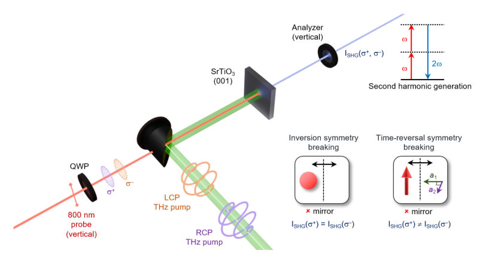
<figcaption class="paper-figure-caption"><b>Fig 1.</b> Figure 1. THz-field-driven ultrafast manipulation of polarization and magnetization</figcaption>
</figure>
<figure class="paper-figure-card">
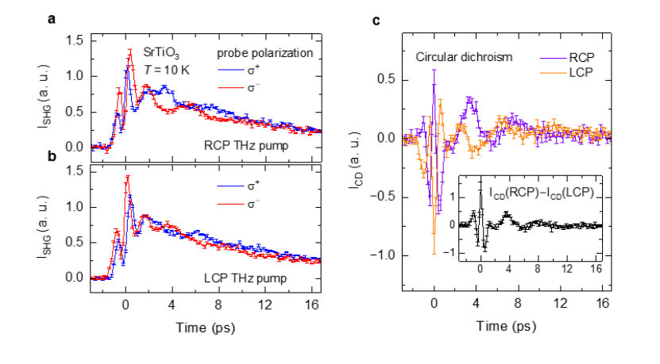
<figcaption class="paper-figure-caption"><b>Fig 2.</b> Figure 2. Time-reversal-symmetry-broken THz oscillations in second harmonic</figcaption>
</figure>
<figure class="paper-figure-card">
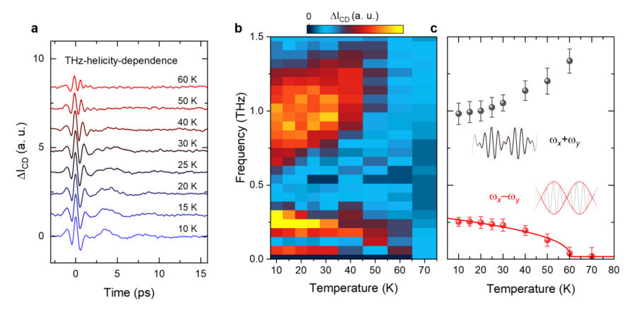
<figcaption class="paper-figure-caption"><b>Fig 3.</b> Figure 3. Temperature-dependent fast and slow oscillatory signals in elliptically</figcaption>
</figure>
<figure class="paper-figure-card">
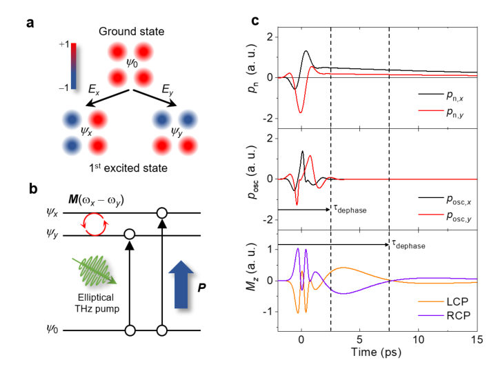
<figcaption class="paper-figure-caption"><b>Fig 4.</b> Figure 4. Numerical simulation for elliptically polarized THz-pump-induced quantum</figcaption>
</figure>
</div>

<p><strong>Summary.</strong> This paper reports the detection and characterization of quantum ionic magnetism in SrTiO3 using THz-pumped nonlinear optical techniques. By observing oscillatory magnetization that defies classical predictions, the authors confirm that the effect originates from quantum beating between ionic eigenstates. This work establishes a method for ultrafast control of ionic magnetism crucial for advanced spintronic and thermotronic applications.</p>
<p><strong>Why it may be interesting.</strong> This work provides a direct experimental pathway to observe and control quantum mechanical magnetic moments arising from lattice vibrations (ionic motion) using ultrafast THz pulses, which is highly relevant to understanding emergent magnetism in quantum materials.</p>
<details>
<summary>Detailed structure</summary>
<p><strong>Main problem.</strong> The study investigates the generation and ultrafast control of quantum ionic magnetism in the quantum paraelectric material SrTiO3.</p>
<p><strong>Main result.</strong> The research observes oscillatory ionic magnetization that persists beyond the relaxation time of polarization oscillations, confirming a quantum mechanical origin distinct from classical electro-optic effects.</p>
<p><strong>Method.</strong> The authors combine THz-pump-induced Second Harmonic Generation Circular Dichroism (SHG-CD) measurements with theoretical modeling using density matrix formalism.</p>
<p><strong>Model / system.</strong> The system is quantum paraelectric SrTiO3, whose dynamics are modeled using the density matrix formalism, considering ionic displacements in a double-well or four-well potential. The THz pulse drives the system, probing coherence between ionic eigenstates.</p>
<p><strong>Key observables.</strong> THz-helicity-dependent $\Delta	ext{ICD}$ and $\Delta	ext{ISHG}$ signals, fast ($\sim 1 	ext{ THz}$) and slow ($\sim 0.2 	ext{ THz}$) oscillatory components, and the time-domain decay of ionic magnetization.</p>
<p><strong>Important parameters / regimes.</strong> Low temperatures (10 K), the quantum paraelectric regime, and the temperature dependence of the slow oscillation frequency ($\sim (1-T/T^*)^{0.5}$ with $T^* \approx 60 	ext{ K}$).</p>
<p><strong>Assumptions / limitations.</strong> The fast oscillations are attributed to the quantum ionic effect rather than purely non-magnetic contributions, and the slow oscillation's temperature dependence is linked to polar nanodomain evolution.</p>
<p><strong>Figures summary.</strong> Figures show time-domain THz-helicity-dependent $\Delta	ext{ICD}$ signals, frequency analysis (FFT) confirming fast and slow oscillations, and temperature dependence plots illustrating the decay of these oscillations.</p>
<p><strong>Paper structure.</strong> The paper establishes the physical problem, presents THz-CD measurements showing helicity-dependent oscillations, develops a quantum model using the density matrix, and finally compares simulation results (showing slow oscillations persisting after polarization decay) with the experimental observations.</p>
</details>
<details>
<summary>Abstract</summary>
<p>Magnetic moments carried by rotating ionic motion in crystals are becoming recognized as an important contribution to magnetism, angular momentum transport, and optical activity. However, efficient approaches to their dynamical control are lacking. Here, we report THz-driven generation and optical detection of quantum ionic magnetism in quantum paraelectric SrTiO3. We observe an oscillatory ionic magnetization without a corresponding oscillatory polarization, contradicting from the classical relation M~PXdP/dt while its suppression above the quantum paraelectric regime points to a quantum ionic origin. Analysis shows that this effect results from the beating between quantum ionic eigenstates whose degeneracy is lifted due to the directional symmetry breaking by the THz pulse. The presented approach provides a pathway for the ultrafast control of ionic magnetization in quantum materials for spintronic and thermotronic applications.</p>
</details>
<p><sub><a href="#top">↑ back to top</a></sub></p>

<p><a id="paper-2609.27487"></a></p>
<h3 id="spurious-spin-nutation-modes-arising-from-truncated-memory-effects"><a href="http://arxiv.org/abs/2609.27487v1">Spurious spin nutation modes arising from truncated memory effects</a></h3>
<p><strong>Authors:</strong> Markus Weißenhofer, Ritwik Mondal, M. S. Mrudul, Peter M. Oppeneer<br>
<strong>Type:</strong> theory · <strong>Category:</strong> other · <strong>PDF:</strong> <a href="https://arxiv.org/pdf/2609.27487v1">https://arxiv.org/pdf/2609.27487v1</a><br>
<strong>Analysis basis:</strong> full PDF text, analyzed in chunks
<strong>Topic relevance:</strong> <code>correlated / nonlocal dissipation</code> <strong>3/5</strong> · <code>Keldysh / 2PI / non-Gaussian methods</code> <strong>2/5</strong> · <code>driven-dissipative phase transition</code> <strong>2/5</strong> · <code>methods for driven-dissipative</code> <strong>2/5</strong> · <code>Tavis-Cummings &amp; cavity-many-emitter</code> <strong>1/5</strong> · <code>analog quantum simulation</code> <strong>1/5</strong> · <code>non-equilibrium universality</code> <strong>1/5</strong> · <code>quantum measurements</code> <strong>1/5</strong></p>
<div class="figure-strip-hint">↔ Scroll figures horizontally</div>
<div class="paper-figures-scroll">
<figure class="paper-figure-card">
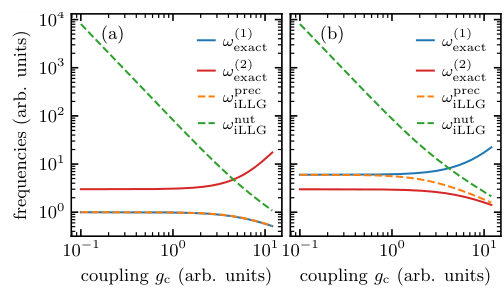
<figcaption class="paper-figure-caption"><b>Fig 1.</b> Figure 1. Comparison between the frequency spectrum ob- tained from the nM-LLG and iLLG for the bare magnon en- ergy being lower (a) and higher (b) than that of the cavity modes.</figcaption>
</figure>
<figure class="paper-figure-card">
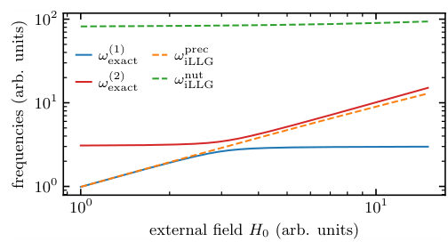
<figcaption class="paper-figure-caption"><b>Fig 2.</b> Figure 2. Hybridization of a magnon and a bath mode. The linearized nM-LLG captures the avoided crossing between magnon and bath modes at the resonance between the bare modes. The character of the modes reverses at the avoided crossing. The linearized iLLG only reproduces the behavior of the low-energy magnetic mode far away from the resonant regime.</figcaption>
</figure>
</div>

<p><strong>Summary.</strong> This theoretical work analyzes spin dynamics, comparing the full non-Markovian description with the simplified inertial Landau-Lifshitz-Gilbert (iLLG) equation. The authors demonstrate that the iLLG is merely a low-frequency truncation of the true dynamics. Consequently, the high-frequency nutation mode predicted by the iLLG is identified as a spurious artifact, cautioning against interpreting such spectral matches as definitive physical evidence.</p>
<p><strong>Why it may be interesting.</strong> This work is highly relevant to AMO physics and open quantum systems as it provides a rigorous warning about the pitfalls of approximating memory effects in open quantum dynamics, particularly when dealing with high-frequency spectral features.</p>
<details>
<summary>Detailed structure</summary>
<p><strong>Main problem.</strong> The paper investigates the physical validity of high-frequency 'spin nutation modes' predicted by the inertial Landau-Lifshitz-Gilbert (iLLG) equation, questioning if they are genuine physical excitations or mathematical artifacts.</p>
<p><strong>Main result.</strong> The iLLG equation is shown to be a low-frequency, second-order truncation of the true, non-Markovian dynamics, leading to the prediction of spurious, high-frequency roots that do not exist in the exact spectrum.</p>
<p><strong>Method.</strong> The authors compare the exact dynamics derived from a non-Markovian memory kernel (nM-LLG) against the simplified iLLG approximation by analyzing the frequency spectrum in the context of a minimal spin-cavity model.</p>
<p><strong>Model / system.</strong> The system is a localized atomic spin moment coupled to additional dynamical variables (e.g., bosonic cavity modes), leading to a non-Markovian spin dynamics described by a memory kernel.</p>
<p><strong>Key observables.</strong> Frequency spectra ($\omega$) of the coupled system, specifically comparing the iLLG nutation frequency ($\omega_{nut}^{iLLG}$) against the exact spectrum ($\omega_{exact}$).</p>
<p><strong>Important parameters / regimes.</strong> The coupling strength ($g_c$), the cavity resonance frequency ($\omega_c$), and the memory kernel parameters ($\alpha, \eta$).</p>
<p><strong>Assumptions / limitations.</strong> The primary assumption being tested is the validity of low-frequency, second-order truncations of memory kernels; the iLLG itself is based on such a truncation.</p>
<p><strong>Figures summary.</strong> Figures compare the exact and iLLG spectra, showing the divergence of the iLLG nutation mode and the failure of the iLLG to capture physical phenomena like avoided crossings near resonance.</p>
<p><strong>Paper structure.</strong> The paper establishes the full non-Markovian dynamics, derives the iLLG as a low-frequency approximation, and then uses a minimal model to explicitly calculate and compare the resulting frequency spectra, demonstrating the artifactual nature of the iLLG root.</p>
</details>
<details>
<summary>Abstract</summary>
<p>Spin dynamics is conventionally treated as inertia-free. The inertial Landau-Lifshitz-Gilbert equation (iLLG) extends this with a second-order time derivative, predicting a high-frequency nutational mode that recent experiments have claimed to observe and interpreted as direct evidence for spin inertia. We show that when spin inertia is generated by eliminating additional dynamical degrees of freedom, the resulting exact spin-only description is generally non-Markovian. The iLLG is recovered as the low-frequency, second-order truncation of the underlying memory kernel. Using a minimal spin--cavity model, we show that the exact eigenfrequencies and those obtained via the iLLG differ and that the spin nutation mode predicted by the latter is a truncation-induced high-frequency artifact. This raises a broader question of the applicability of the iLLG obtained from analogous low-frequency truncations, which may likewise generate spurious high-frequency roots. Consequently, agreement of a high-frequency spectral feature with the iLLG nutation frequency does not, by itself, establish a physical nutation mode.</p>
</details>
<p><sub><a href="#top">↑ back to top</a></sub></p>

<p><a id="paper-2609.27575"></a></p>
<h3 id="ultrastrong-coupling-of-topologically-protected-edge-and-bulk-magnetoplasmons-without-a-dedicated-cavity"><a href="http://arxiv.org/abs/2609.27575v1">Ultrastrong coupling of topologically protected edge and bulk magnetoplasmons without a dedicated cavity</a></h3>
<p><strong>Authors:</strong> F. Velli, P. Sai, M. Dub, J. Dzian, F. Le Mardele, M. Mittendorff, M. Orlita, W. Knap, C. Lange<br>
<strong>Type:</strong> both · <strong>Category:</strong> other · <strong>PDF:</strong> <a href="https://arxiv.org/pdf/2609.27575v1">https://arxiv.org/pdf/2609.27575v1</a><br>
<strong>Analysis basis:</strong> full PDF text, analyzed in chunks
<strong>Topic relevance:</strong> <code>analog quantum simulation</code> <strong>3/5</strong> · <code>Tavis-Cummings &amp; cavity-many-emitter</code> <strong>2/5</strong> · <code>quantum optics experiment</code> <strong>2/5</strong> · <code>correlated / nonlocal dissipation</code> <strong>1/5</strong> · <code>driven-dissipative phase transition</code> <strong>1/5</strong> · <code>interference shaping light</code> <strong>1/5</strong></p>
<div class="figure-strip-hint">↔ Scroll figures horizontally</div>
<div class="paper-figures-scroll">
<figure class="paper-figure-card">
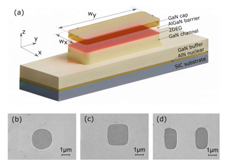
<figcaption class="paper-figure-caption"><b>Fig 1.</b> FIG. 1. (a) Schematic of etched AlGaN/GaN rectangular mesa with layers of the heterostructure.</figcaption>
</figure>
<figure class="paper-figure-card">
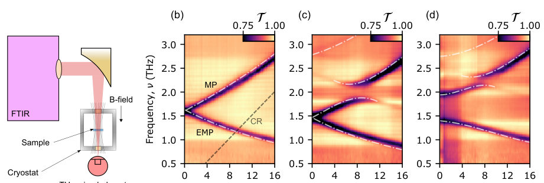
<figcaption class="paper-figure-caption"><b>Fig 2.</b> FIG. 2. Magnetospectroscopy of patterned GaN plasmonic structures in transmission configu-</figcaption>
</figure>
<figure class="paper-figure-card">
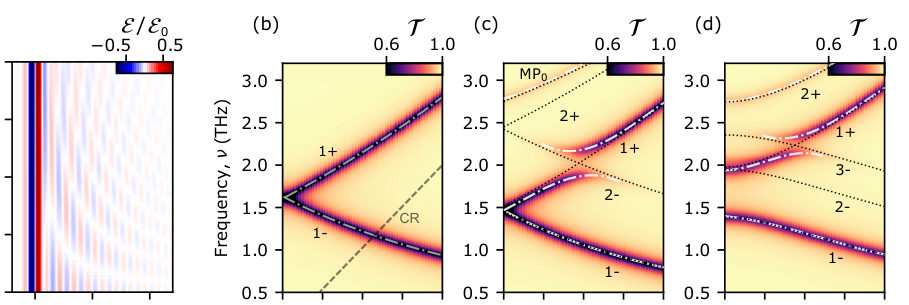
<figcaption class="paper-figure-caption"><b>Fig 3.</b> FIG. 3. Results of the quantum model. (a) Transmitted electric field in the case of disk magneto-</figcaption>
</figure>
<figure class="paper-figure-card">
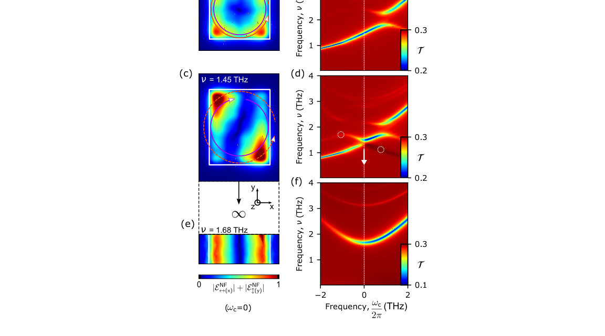
<figcaption class="paper-figure-caption"><b>Fig 4.</b> FIG. 4. FEM simulations for right-circularly polarized incident light. (a),(c),(e) Normalized</figcaption>
</figure>
<figure class="paper-figure-card">
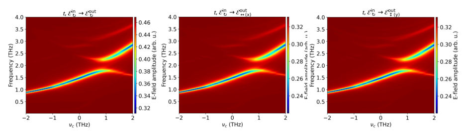
<figcaption class="paper-figure-caption"><b>Fig 5.</b> FIG. 5. FEM far-field transmission spectra for the square patch with right-circularly polarized</figcaption>
</figure>
</div>

<p><strong>Summary.</strong> This paper demonstrates how to achieve ultrastrong coupling between magnetoplasmon modes in patterned semiconductor nanostructures, eliminating the need for external resonant cavities. By controlling the geometry and symmetry of the electron gas, researchers can engineer strong, tunable interactions between topologically protected edge and bulk plasmon modes. This opens a new parameter space for quantum light-matter interaction based on material topology.</p>
<p><strong>Why it may be interesting.</strong> This work provides a novel, purely material-based method to engineer strong light-matter coupling, which is a central theme in cavity QED and quantum optics, by leveraging topological and symmetry properties of plasmons.</p>
<details>
<summary>Detailed structure</summary>
<p><strong>Main problem.</strong> The research aims to achieve ultrastrong light-matter coupling between magnetoplasmon excitations without relying on conventional dedicated electromagnetic cavities.</p>
<p><strong>Main result.</strong> By patterning the semiconductor material geometry (e.g., square or rectangular patches), the coupling strength can be engineered up to 0.1, leading to observable energy gaps and chiral-mode hybridization.</p>
<p><strong>Method.</strong> The study combines experimental magnetospectroscopy on patterned AlGaN/GaN quantum wells with theoretical modeling using quantum Hamiltonians and Finite-Element Method (FEM) simulations.</p>
<p><strong>Model / system.</strong> The system is a two-dimensional electron gas (2DEG) in patterned AlGaN/GaN quantum wells subjected to a perpendicular magnetic field. The physics is described by a quantum Hamiltonian incorporating magnetoplasmon modes and coupling terms.</p>
<p><strong>Key observables.</strong> Magnetoplasmon-Polariton (MPP) doublet splitting, energy gaps at zero magnetic field, and the magnetic field dependence of the plasmon resonance frequency.</p>
<p><strong>Important parameters / regimes.</strong> Ultrastrong coupling regime ($\Omega_R/\omega_0 \approx 0.1$), magnetic field strength (up to 16 T), and the geometric symmetry (disk $    o$ square $ o$ rectangle).</p>
<p><strong>Assumptions / limitations.</strong> The analysis assumes the ability to tailor interactions solely through the spatial symmetry of the confined medium, bypassing cavity-related field distortions.</p>
<p><strong>Figures summary.</strong> Figures show SEM images of patterned patches (disk, square, rectangle) and corresponding magnetospectroscopy results illustrating the anti-crossing and mode hybridization.</p>
<p><strong>Paper structure.</strong> The work progresses by first establishing the physical platform and the need to bypass cavities, then developing the quantum model and Hamiltonian, and finally demonstrating the control over coupling and mode hybridization by systematically changing the geometry's symmetry.</p>
</details>
<details>
<summary>Abstract</summary>
<p>In the ultrastrong light-matter coupling regime, the ability to confine the electric field to subwavelength scales and define an electromagnetic mode is essential. This task is typically achieved through dedicated cavities, such as THz metal resonators. Here, we instead introduce ultrastrong coupling directly between distinct magnetoplasmon excitations, leveraging solely the spatial symmetry of a confined electronic medium in the presence of a magnetic field. By patterning an AlGaN/GaN single quantum well hosting a two-dimensional electron gas into micrometer-scale patches, we tailor the mutual interactions between topologically protected edge and bulk magnetoplasmons, achieving coupling strengths of up to 0.1. The progressive breaking of rotational symmetry determines the coupling rules and leads to the emergence of energy gaps and unique chiral-mode hybridization. Our results highlight a path towards exploiting the symmetry class and topology of the magnetoplasmon wavefunction as a new parameter space for ultrastrong light-matter interaction without a dedicated cavity.</p>
</details>
<p><sub><a href="#top">↑ back to top</a></sub></p>

<p><a id="paper-2609.27716"></a></p>
<h3 id="aharonov-bohm-interference-probing-of-chiral-andreev-edge-states-via-scanning-gate-microscopy"><a href="http://arxiv.org/abs/2609.27716v1">Aharonov-Bohm interference probing of chiral Andreev edge states via scanning gate microscopy</a></h3>
<p><strong>Authors:</strong> S. Maji, M. P. Nowak<br>
<strong>Type:</strong> theory · <strong>Category:</strong> other · <strong>PDF:</strong> <a href="https://arxiv.org/pdf/2609.27716v1">https://arxiv.org/pdf/2609.27716v1</a><br>
<strong>Analysis basis:</strong> full PDF text, analyzed in chunks
<strong>Topic relevance:</strong> <code>quantum measurements</code> <strong>3/5</strong> · <code>Keldysh / 2PI / non-Gaussian methods</code> <strong>2/5</strong> · <code>methods for driven-dissipative</code> <strong>2/5</strong> · <code>analog quantum simulation</code> <strong>1/5</strong> · <code>interference shaping light</code> <strong>1/5</strong></p>
<div class="figure-strip-hint">↔ Scroll figures horizontally</div>
<div class="paper-figures-scroll">
<figure class="paper-figure-card">
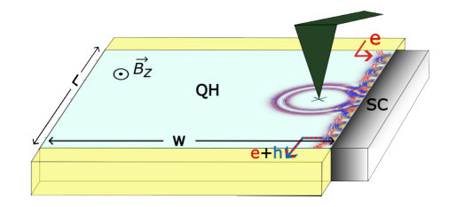
<figcaption class="paper-figure-caption"><b>Fig 1.</b> Figure 1. Schematic diagram of the QH-SC system. The light green part denotes the QH part, the gray region denotes the superconducting part and the yellow parts denote the semi- infinite normal leads. The electrons propagating on the QH edge mode forms CAES at the NS interface. We plot resulting probability current at the edge, where colors correspond to its electron (red) and hole (blue) character. The SGM tip, introduced in the system and denoted by the dark green color, locally perturbs the CAES at the QH-SC edge, detouring its path from the interface.</figcaption>
</figure>
<figure class="paper-figure-card">
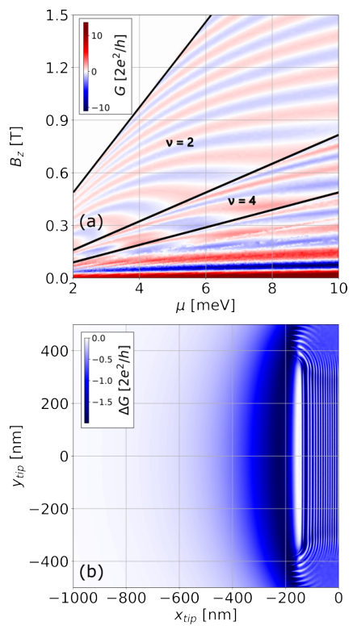
<figcaption class="paper-figure-caption"><b>Fig 2.</b> Figure 2. (a) Conductance map for QH-SC system without the SGM tip versus the chemical potential and the magnetic field. (b) Conductance difference varying the SGM tip posi- tion for B = 0.912 T, µ = 5 meV.</figcaption>
</figure>
<figure class="paper-figure-card">
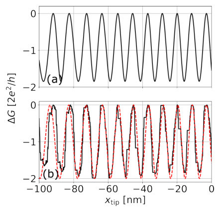
<figcaption class="paper-figure-caption"><b>Fig 3.</b> Figure 4. (a) Conductance cross-section from Fig. 2(b) for ytip = 0. (b) Black curve shows the conductance versus the tip position for the approximation of the circular hardwall potential. Red dashed curve shows the analytical approxima- tion of the conductance due to Aharonov-Bohm interference obtained through Eq. 11. µ = 5 meV and B = 0.912 T for all plots.</figcaption>
</figure>
<figure class="paper-figure-card">
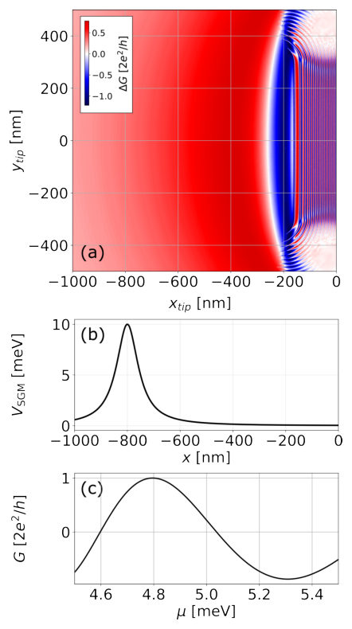
<figcaption class="paper-figure-caption"><b>Fig 4.</b> Figure 3. (a) Conductance difference varying SGM tip at µ = 5 meV. (b) SGM potential distribution along the x-direction for the tip center located at x = −800 nm. (c) Conductance without the tip versus the chemical potential. The results are obtained for B = 1 T.</figcaption>
</figure>
<figure class="paper-figure-card">
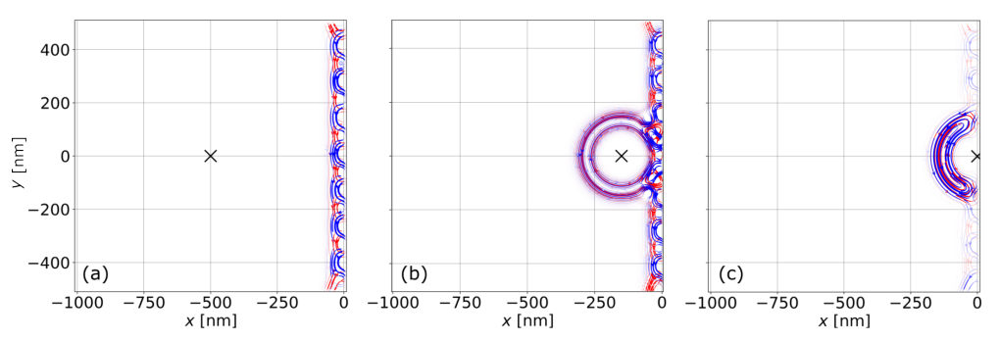
<figcaption class="paper-figure-caption"><b>Fig 5.</b> Figure 5. Probability currents obtained with SGM tip at magnetic field Bz = 0.912 T and µ = 5 meV (a) at xtip = −500 nm, (b) xtip = −150 nm, ytip = 0 (c) xtip = 0 nm, ytip = 0. The red (blue) colors correspond to electron (hole) part of the probability currents.</figcaption>
</figure>
</div>

<p><strong>Summary.</strong> This work theoretically models how chiral Andreev edge states behave when probed by a scanning gate microscope at a quantum Hall-superconductor interface. By analyzing the system using the Bogoliubov-de Gennes formalism, the authors predict and demonstrate that the local tip potential induces Aharonov-Bohm oscillations in the conductance. This technique offers a robust method to characterize superconducting edge states, even when disorder is present.</p>
<p><strong>Why it may be interesting.</strong> The ability to use a local probe (SGM) to map out fundamental quantum interference phenomena (AB effect) in superconducting edge states provides a powerful conceptual link between topological superconductivity and mesoscopic transport measurements.</p>
<details>
<summary>Detailed structure</summary>
<p><strong>Main problem.</strong> The paper theoretically investigates how chiral Andreev edge states (CAESs) at a quantum Hall-superconductor interface respond to local perturbations from a scanning gate microscope (SGM).</p>
<p><strong>Main result.</strong> The SGM tip forces the electron and hole components of the CAESs to accumulate a relative magnetic phase, leading to observable Aharonov-Bohm-type conductance oscillations, which persist even in the presence of disorder.</p>
<p><strong>Method.</strong> The analysis uses the Bogoliubov-de Gennes formalism and the Landauer-Büttiker approach to calculate non-local conductance ($G$) as a function of the tip position.</p>
<p><strong>Model / system.</strong> The system is a Quantum Hall-Superconductor (QH-SC) hybrid structure. The physics is governed by the Bogoliubov-de Gennes Hamiltonian, incorporating the local potential of the SGM tip and the magnetic field via the vector potential.</p>
<p><strong>Key observables.</strong> Aharonov-Bohm-type conductance oscillations ($\Delta G$), probability current maps, and the dependence of oscillation amplitude on the filling factor ($
u$).</p>
<p><strong>Important parameters / regimes.</strong> Filling factors ($
u=2, 
u=4$), magnetic field ($B$), disorder strength ($U_d$), and the tip position ($x_{  ext{tip}}, y_{  ext{tip}}$).</p>
<p><strong>Assumptions / limitations.</strong> Assumes negligible Zeeman interaction and spin degeneracy; the analysis often relies on approximating the tip potential and assuming adiabatic evolution of the edge states.</p>
<p><strong>Figures summary.</strong> Figures illustrate conductance maps ($\Delta G$) showing characteristic oscillations as the tip scans across the edge, and probability current maps demonstrating the decoupling of electron and hole paths.</p>
<p><strong>Paper structure.</strong> The paper progresses from establishing the theoretical framework (Bogoliubov-de Gennes model) to deriving the AB oscillation formula based on mode decoupling, demonstrating this effect for $
u=2$ and $
u=4$, and finally extending the analysis to show the robustness of the signature against disorder.</p>
</details>
<details>
<summary>Abstract</summary>
<p>We theoretically investigate the spatial response of chiral Andreev edge states at a quantum Hall-superconductor interface probed by scanning gate microscopy. Using the Bogoliubov-de Gennes formalism, we demonstrate that the localized potential of the scanning gate tip decouples the chiral Andreev edge states from the superconductor into independent electron and hole paths. In the $ν=2$ regime, this local separation forces the quasiparticles to accumulate a relative magnetic phase in the normal region, resulting in Aharonov-Bohm-type conductance oscillations that are captured by a geometric analytical model. At higher filling factors (e.g., $ν=4$), the tip progressively interacts with spatially distinct edge channels, dynamically altering the Andreev-induced mode mixing and modifying the transport resonances. Furthermore, we show that these highly localized interferometric signatures survive in the presence of disorder, even when conventional non-local transport oscillations are masked.</p>
</details>
<p><sub><a href="#top">↑ back to top</a></sub></p>

<p><a id="paper-2609.27106"></a></p>
<h3 id="detecting-a-large-magneto-optical-shift-in-pynio-bilayers"><a href="http://arxiv.org/abs/2609.27106v1">Detecting a large magneto-optical shift in Py/NiO bilayers</a></h3>
<p><strong>Authors:</strong> Adrielson Dias, Maria Clara, Ozéas Rodrigues, Gabriel Henrique, José Lucas, José Holanda<br>
<strong>Type:</strong> experiment · <strong>Category:</strong> other · <strong>PDF:</strong> <a href="https://arxiv.org/pdf/2609.27106v1">https://arxiv.org/pdf/2609.27106v1</a><br>
<strong>Analysis basis:</strong> full PDF text, analyzed in chunks
<strong>Topic relevance:</strong> <code>quantum optics experiment</code> <strong>3/5</strong> · <code>analog quantum simulation</code> <strong>2/5</strong> · <code>quantum measurements</code> <strong>2/5</strong> · <code>interference shaping light</code> <strong>1/5</strong></p>
<div class="figure-strip-hint">↔ Scroll figures horizontally</div>
<div class="paper-figures-scroll">
<figure class="paper-figure-card">
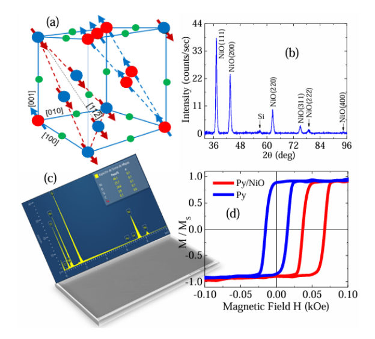
<figcaption class="paper-figure-caption"><b>Fig 1.</b> Figure 1: (a) NiO unit cell in an fcc structure with two distinct anisotropy axes: a hard axis</figcaption>
</figure>
<figure class="paper-figure-card">
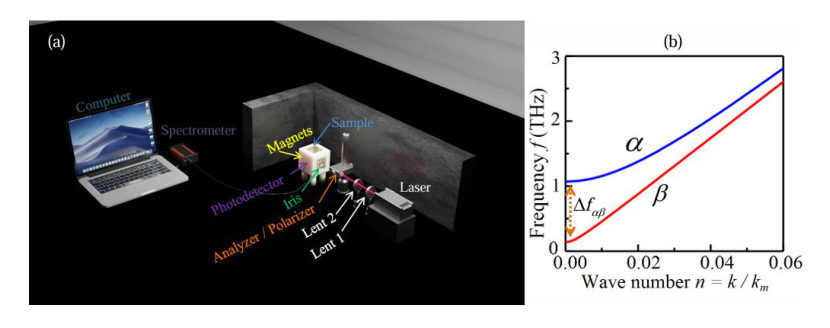
<figcaption class="paper-figure-caption"><b>Fig 2.</b> Figure 2: Illustrates the experimental setup used for the magneto-optical measurements.</figcaption>
</figure>
<figure class="paper-figure-card">
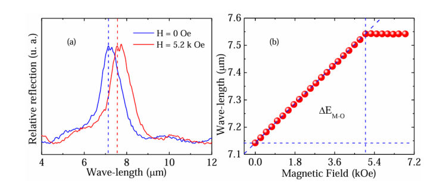
<figcaption class="paper-figure-caption"><b>Fig 3.</b> Figure 3: (a) (a) Shows the relative optical reflection spectra of the Py (20 nm)/NiO (200</figcaption>
</figure>
<figure class="paper-figure-card">
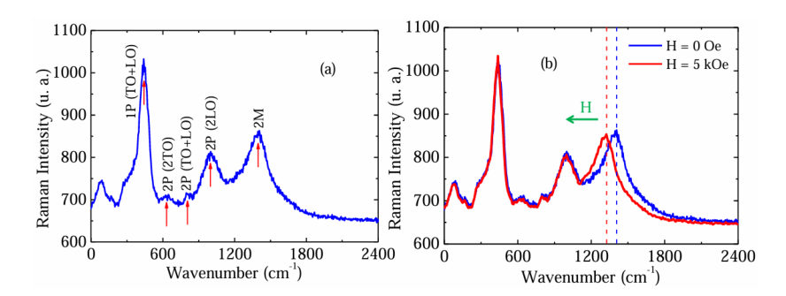
<figcaption class="paper-figure-caption"><b>Fig 4.</b> Figure 4: (a) Presents the vibrational and magnon Raman peaks. The observed features are</figcaption>
</figure>
</div>

<p><strong>Summary.</strong> This paper reports on magneto-optical measurements on Py/NiO bilayers, observing a large, field-dependent spectral shift. The findings confirm that this shift arises from the control of antiferromagnetic magnon energies within the NiO layer. This establishes the bilayer as a promising platform for optically probing and manipulating antiferromagnetic spin dynamics.</p>
<p><strong>Why it may be interesting.</strong> The direct experimental control of magnon energies using optical probes and magnetic fields is highly relevant to understanding and manipulating quantum excitations in magnetic materials, which connects to open quantum systems and quantum optics.</p>
<details>
<summary>Detailed structure</summary>
<p><strong>Main problem.</strong> The study aims to detect and characterize a large magneto-optical shift in Py/NiO bilayers, demonstrating strong magneto-optical coupling in an antiferromagnetic system.</p>
<p><strong>Main result.</strong> The research provides direct experimental evidence for magnetic-field control of antiferromagnetic magnon energies via magneto-optical interactions in the NiO layer.</p>
<p><strong>Method.</strong> Magneto-optical magnetometry measurements were performed on the bilayers, analyzing spectral shifts using a laser source and spectrometer.</p>
<p><strong>Model / system.</strong> The physical system is a Py/NiO bilayer, where NiO acts as the antiferromagnetic layer and Py is the ferromagnetic underlayer. The effect is attributed to magnons intrinsic to the NiO layer.</p>
<p><strong>Key observables.</strong> Pronounced, systematic, and monotonic spectral shift (wavelength shift) up to ~400 nm, and associated magneto-optical energy variation on the order of 10^7 eV.</p>
<p><strong>Important parameters / regimes.</strong> The bilayer thickness is Py (20 nm)/NiO (200 nm). The shift saturates at higher applied magnetic fields.</p>
<p><strong>Assumptions / limitations.</strong> The observed effect originates from magnons intrinsic to the AF NiO layer, and the contribution from the Py underlayer is negligible due to the large NiO thickness.</p>
<p><strong>Figures summary.</strong> Figure 3 shows the wavelength shift induced by the magnetic field in reflectance spectra. Figure 4 compares Raman spectra, showing the shift only in the two-magnon (2M) mode.</p>
<p><strong>Paper structure.</strong> The paper establishes the physical system and measurement setup, presents the observation of the field-dependent spectral shift, analyzes the shift magnitude and origin (confirming magnon control), and concludes by establishing the platform's potential.</p>
</details>
<details>
<summary>Abstract</summary>
<p>Here, magneto-optical magnetometry measurements on Py/NiO bilayers reveal a pronounced magnetic-field-induced wavelength shift, demonstrating strong magneto-optical coupling in this antiferromagnetic system. A systematic and monotonic spectral shift of up to ~ 400 nm is observed as the applied magnetic field increases, saturating at higher fields. Quantitative analysis shows that the associated magneto-optical energy variation is on the order of 107 eV, comparable to the magnon energy scale in NiO. Owing to the large NiO thickness, the observed effect originates from magnons intrinsic to the antiferromagnetic NiO layer rather than from spin currents injected by the Py underlayer. These results provide direct experimental evidence for magnetic-field control of antiferromagnetic magnon energies via magneto-optical interactions, establishing Py/NiO bilayers as a promising platform for optically probing and manipulating antiferromagnetic spin dynamics.</p>
</details>
<p><sub><a href="#top">↑ back to top</a></sub></p>

<p><a id="paper-2609.28125"></a></p>
<h3 id="helical-anomaly-from-concurrent-math1152math-and-math1153math-topology-in-an-acoustic-semimetal"><a href="http://arxiv.org/abs/2609.28125v1">Helical Anomaly from Concurrent $\mathbb{Z}$ and $\mathbb{Z}_2$ Topology in an Acoustic Semimetal</a></h3>
<p><strong>Authors:</strong> Hou-Yin Li, Hua-Shan Lai, Jian-Lan Xie, Xiao-Chen Sun, Yan-Feng Chen, Cheng He<br>
<strong>Type:</strong> both · <strong>Category:</strong> other · <strong>PDF:</strong> <a href="https://arxiv.org/pdf/2609.28125v1">https://arxiv.org/pdf/2609.28125v1</a><br>
<strong>Analysis basis:</strong> full PDF text, analyzed in chunks
<strong>Topic relevance:</strong> <code>analog quantum simulation</code> <strong>3/5</strong></p>
<div class="figure-strip-hint">↔ Scroll figures horizontally</div>
<div class="paper-figures-scroll">
<figure class="paper-figure-card">
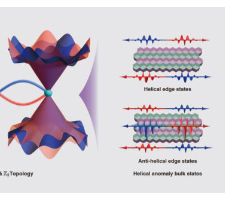
<figcaption class="paper-figure-caption"><b>Fig 1.</b> Fig.1| Semimetal band structure hosting bulk ℤ and boundary ℤ𝟐 topology, leading to the realization of</figcaption>
</figure>
<figure class="paper-figure-card">
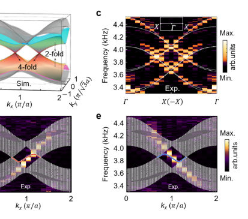
<figcaption class="paper-figure-caption"><b>Fig 2.</b> Fig. 2| Concurrent ℤ and ℤ𝟐 topology in acoustic crystal bands. a Schematic of the acoustic staggered lattice.</figcaption>
</figure>
<figure class="paper-figure-card">
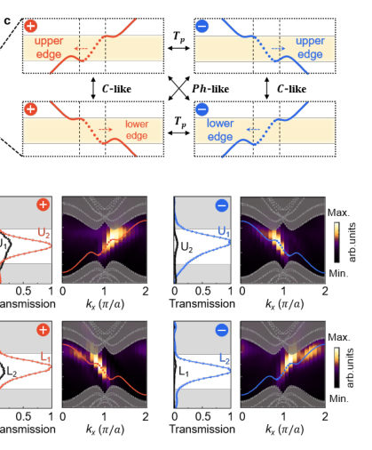
<figcaption class="paper-figure-caption"><b>Fig 3.</b> Fig. 3| Realization of HESs. a Lattice for HESs. Periodic boundary conditions along x; finite configuration along y</figcaption>
</figure>
<figure class="paper-figure-card">
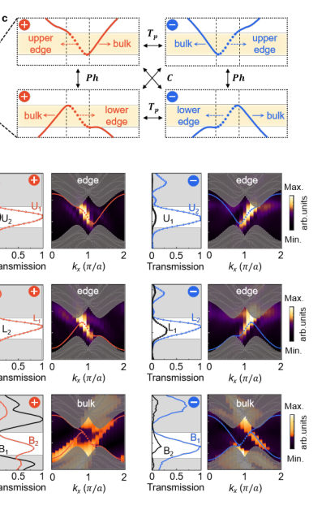
<figcaption class="paper-figure-caption"><b>Fig 4.</b> Fig. 4| Realization of anti-HESs. It is similar to Fig. 3 except for the following points: a The sample possesses</figcaption>
</figure>
</div>

<p><strong>Summary.</strong> This paper reports the realization of a novel topological regime in an acoustic semimetal where bulk and boundary properties are simultaneously protected by distinct $\mathbb{Z}$ and $\mathbb{Z}_2$ invariants. By engineering the lattice symmetries, the authors demonstrate 'helical anomaly bulk states' (HABSs), establishing a new paradigm for understanding topological transport beyond conventional single-class theories.</p>
<p><strong>Why it may be interesting.</strong> The work extends topological physics beyond single-invariant descriptions, providing a concrete, experimentally verifiable platform (acoustic metamaterials) to study complex, multi-faceted topological invariants.</p>
<details>
<summary>Detailed structure</summary>
<p><strong>Main problem.</strong> The paper investigates topological phases characterized by the concurrent presence of both $\mathbb{Z}$ (integer) and $\mathbb{Z}_2$ invariants, a regime that is theoretically challenging to realize and study.</p>
<p><strong>Main result.</strong> The authors realize and characterize 'helical anomaly bulk states' (HABSs) in a 2D acoustic semimetal, demonstrating that bulk and boundary degeneracies can be jointly governed by distinct topological invariants.</p>
<p><strong>Method.</strong> The research combines theoretical modeling (Hamiltonian construction, symmetry analysis) with advanced experimental techniques involving 3D printing and point-by-point sound pressure field measurements.</p>
<p><strong>Model / system.</strong> The physical system is a two-dimensional acoustic semimetal realized in a staggered lattice structure. The model utilizes engineered degrees of freedom (layer, sublattice, gauge-staggered) to control symmetries like time-reversal and particle-hole symmetry.</p>
<p><strong>Key observables.</strong> Bulk degeneracies protected by $\mathbb{Z}$ invariants (Weyl points), boundary degeneracies protected by $\mathbb{Z}_2$ invariants (twisted boundary arcs), and the resulting pseudospin-selective HABSs.</p>
<p><strong>Important parameters / regimes.</strong> The system's behavior is controlled by engineered symmetries and the interplay between the $\mathbb{Z}$ and $\mathbb{Z}_2$ topological invariants.</p>
<p><strong>Assumptions / limitations.</strong> The analysis assumes the system can be effectively classified within the DIII symmetry class, and that the acoustic system can mimic electronic topological properties.</p>
<p><strong>Figures summary.</strong> Figures illustrate the band structure showing the coexistence of $\mathbb{Z}$ and $\mathbb{Z}_2$ topology, visualizing HESs/anti-HESs, and confirming the existence of HABSs through measured and simulated dispersions.</p>
<p><strong>Paper structure.</strong> The paper progresses from establishing the theoretical framework of concurrent $\mathbb{Z}$ and $\mathbb{Z}_2$ topology to detailing the physical realization in an acoustic semimetal, culminating in the experimental measurement and characterization of the novel HABS states.</p>
</details>
<details>
<summary>Abstract</summary>
<p>Topological classification constitutes a cornerstone of modern condensed-matter physics. Historically, topological systems have been predominantly characterized by invariants confined to a single topological class, such as topological insulators with a $\mathbb{Z}_2$ invariant and Weyl semimetals with an integer ($\mathbb{Z}$) topological charge. While such classification frameworks in principle permit gapless phases in which bulk and boundary degeneracies are protected by distinct invariants, this regime has received limited focused attention, as coordinating the requisite symmetries within a single band structure is highly nontrivial. Here, we realize such concurrent $\mathbb{Z}$ and $\mathbb{Z}_2$ topology in a two-dimensional acoustic semimetal, revealing pseudospin-selective topological bulk modes arising from the interplay between these distinct invariants, termed helical anomaly bulk states (HABSs). Our lattice design exploits layer, sublattice, and gauge-staggered degrees of freedom, enabling modular control of effective time-reversal, chiral, and particle-hole symmetries. The resulting system exhibits bulk degeneracies protected by an integer $\mathbb{Z}$ invariant and Kramers-like boundary degeneracies protected by a $\mathbb{Z}_2$ invariant, forming twisted boundary arcs. Crucially, finite-size systems manifest helical or anti-helical edge states coexisting with HABSs, a distinctive signature absent in single-invariant topologies. Our results establish HABSs as a characteristic signature of concurrent topology and demonstrate a new regime where bulk and boundary invariants jointly govern topological transport beyond conventional single-class frameworks.</p>
</details>
<p><sub><a href="#top">↑ back to top</a></sub></p>

<p><a id="paper-2609.28039"></a></p>
<h3 id="computation-of-turing-bifurcation-normal-form-for-n-component-reaction-diffusion-systems"><a href="http://arxiv.org/abs/2609.28039v1">Computation of Turing bifurcation normal form for n-component reaction-diffusion systems</a></h3>
<p><strong>Authors:</strong> Edgardo Villar-Sepúlveda, Alan R. Champneys<br>
<strong>Type:</strong> theory · <strong>Category:</strong> statistical mechanics · <strong>PDF:</strong> <a href="https://arxiv.org/pdf/2609.28039v1">https://arxiv.org/pdf/2609.28039v1</a><br>
<strong>Analysis basis:</strong> full PDF text, analyzed in chunks
<strong>Topic relevance:</strong> <code>Keldysh / 2PI / non-Gaussian methods</code> <strong>2/5</strong> · <code>analog quantum simulation</code> <strong>2/5</strong> · <code>driven-dissipative phase transition</code> <strong>2/5</strong> · <code>methods for driven-dissipative</code> <strong>2/5</strong> · <code>non-equilibrium universality</code> <strong>2/5</strong> · <code>correlated / nonlocal dissipation</code> <strong>1/5</strong></p>
<div class="figure-strip-hint">↔ Scroll figures horizontally</div>
<div class="paper-figures-scroll">
<figure class="paper-figure-card">
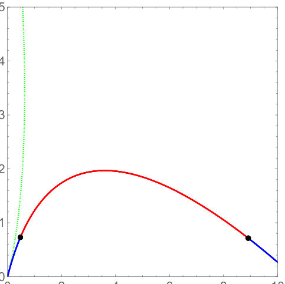
<figcaption class="paper-figure-caption"><b>Fig 1.</b> Fig. 1. Bifurcation diagram of the Schnakenberg model with the addition of cross-diffusion. The dotted green curve represents a BD-line and the blue (resp. red) curve is a subcritical (resp. supercritical) Turing bifurcation. The black points are codimension-two bifurcation points where the third-order coefficient becomes zero.</figcaption>
</figure>
<figure class="paper-figure-card">
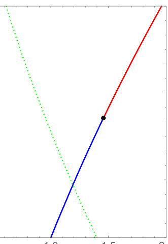
<figcaption class="paper-figure-caption"><b>Fig 2.</b> Fig. 2. Bifurcation diagram of Konishi and Hara’s model. The green dotted curve represents a BD-line and the blue (resp. red) curve is a subcritical (resp. supercritical) Turing bifurcation. The black point is a codimension- two bifurcation point where the third-order coefficient becomes zero.</figcaption>
</figure>
<figure class="paper-figure-card">
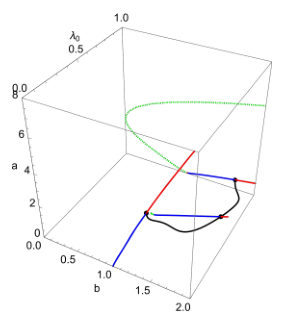
<figcaption class="paper-figure-caption"><b>Fig 3.</b> Fig. 3. Codimension-2 bifurcation curve, together with some Turing bifurcation curves plotted along the way, together with the corresponding colors. The green dotted curve represents a BD-line and the blue (resp. red) curves are subcritical (resp. supercritical) Turing bifurcations. The black points are codimension-two bifurcation points where the third-order coefficient becomes zero.</figcaption>
</figure>
</div>

<p><strong>Summary.</strong> This paper develops a general, high-order mathematical framework to analyze Turing bifurcations in complex $n$-component reaction-diffusion systems. It derives the amplitude equation and calculates coefficients up to the fifth order, allowing researchers to precisely map out where the nature of the instability changes (codimension-two points). The method is highly computational, providing robust tools for analyzing pattern formation in nonlinear physics.</p>
<p><strong>Why it may be interesting.</strong> While focused on classical reaction-diffusion systems, the mathematical machinery of deriving amplitude equations and analyzing codimension-two points is highly relevant to the stability analysis of non-equilibrium quantum systems or pattern formation in quantum field theories.</p>
<details>
<summary>Detailed structure</summary>
<p><strong>Main problem.</strong> The paper derives general expressions for the amplitude equation (normal form) valid at a Turing bifurcation for $n$-component reaction-diffusion systems in one spatial dimension.</p>
<p><strong>Main result.</strong> General expressions for the normal form coefficients up to the fifth order are derived, enabling the systematic detection and analysis of codimension-two points where the bifurcation criticality changes.</p>
<p><strong>Method.</strong> The method involves an order-by-order expansion (Taylor series) of the system's nonlinear terms, leading to an amplitude equation whose coefficients determine the bifurcation type and higher-order stability.</p>
<p><strong>Model / system.</strong> The study concerns $n$-component reaction-diffusion systems governed by $\partial u/\partial t = f(u, \epsilon) + D(\epsilon) \partial^2 u/\partial x^2$. Examples include the Schnakenberg model and four-component systems.</p>
<p><strong>Key observables.</strong> The normal form coefficients ($C_{1,1}, C_3, C_5$) determine the bifurcation criticality; the sign of $C_3$ distinguishes between subcritical and supercritical bifurcations.</p>
<p><strong>Important parameters / regimes.</strong> The bifurcation parameter $\epsilon$ (or $\epsilon^*$), the wavenumber $\hat{k}$, and the order of the expansion (up to fifth order).</p>
<p><strong>Assumptions / limitations.</strong> The analysis assumes the bifurcation occurs at $\epsilon=0$ and is valid for periodic or homogeneous Neumann boundary conditions; the derivation relies on solvability conditions from multiple scales analysis.</p>
<p><strong>Figures summary.</strong> Figures illustrate the bifurcation diagram for models like the Schnakenberg system, showing Turing bifurcation curves colored by the sign of $C_3$, and marking codimension-two points.</p>
<p><strong>Paper structure.</strong> The paper systematically derives the normal form coefficients ($C_3, C_5$) using solvability conditions, presents the resulting amplitude equation, and validates the method computationally using Python and Mathematica to trace bifurcation curves and critical points.</p>
</details>
<details>
<summary>Abstract</summary>
<p>General expressions are derived for the amplitude equation valid at a Turing bifurcation of a system of reaction-diffusion equations in one spatial dimension, with an arbitrary number of components. The normal form is computed up to fifth order, which enables the detection and analysis of codimension-two points where the criticality of the bifurcation changes. The expressions are implemented within a Python package, in which the user needs to specify only expressions for the reaction kinetics and the values of diffusion constants. The code is augmented with a Mathematica routine to compute curves of Turing bifurcations in a parameter plane and automatically detect codimension-two points. The software is illustrated with examples that show the versatility of the method including a case with cross-diffusion, a higher-order scalar equation, and a four-component system.</p>
</details>
<p><sub><a href="#top">↑ back to top</a></sub></p>

<p><a id="paper-2609.28037"></a></p>
<h3 id="amplitude-equations-for-wave-bifurcations-in-reaction-diffusion-systems"><a href="http://arxiv.org/abs/2609.28037v1">Amplitude equations for wave bifurcations in reaction-diffusion systems</a></h3>
<p><strong>Authors:</strong> Edgardo Villar-Sepúlveda, Alan R. Champneys<br>
<strong>Type:</strong> theory · <strong>Category:</strong> other · <strong>PDF:</strong> <a href="https://arxiv.org/pdf/2609.28037v1">https://arxiv.org/pdf/2609.28037v1</a><br>
<strong>Analysis basis:</strong> full PDF text, analyzed in chunks
<strong>Topic relevance:</strong> <code>analog quantum simulation</code> <strong>2/5</strong> · <code>driven-dissipative phase transition</code> <strong>2/5</strong> · <code>non-equilibrium universality</code> <strong>2/5</strong> · <code>Keldysh / 2PI / non-Gaussian methods</code> <strong>1/5</strong> · <code>correlated / nonlocal dissipation</code> <strong>1/5</strong> · <code>methods for driven-dissipative</code> <strong>1/5</strong></p>
<div class="figure-strip-hint">↔ Scroll figures horizontally</div>
<div class="paper-figures-scroll">
<figure class="paper-figure-card">
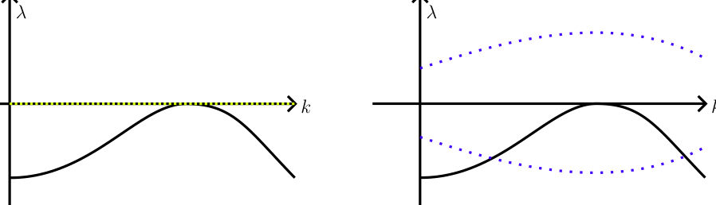
<figcaption class="paper-figure-caption"><b>Fig 1.</b> Figure 1: One branch of dispersion relations corresponding to (a) Turing bifurcation and (b) wave bifurcation. In (a), the eigenvalue plotted is real whilst in (b), two complex-conjugate eigenvalues are plotted. In each plot, solid lines represent the real part of an eigenvalue, and dotted lines correspond to the imaginary part.</figcaption>
</figure>
<figure class="paper-figure-card">
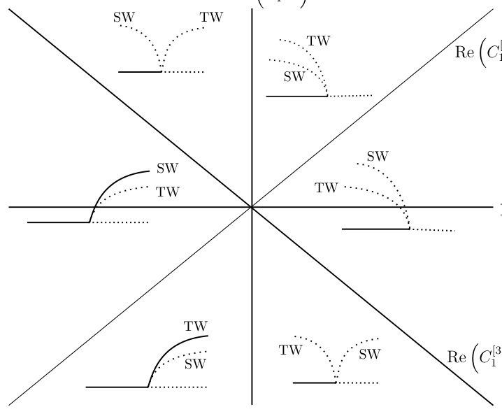
<figcaption class="paper-figure-caption"><b>Fig 2.</b> Figure 2: The region of parameter space in which standing waves (SW) and travelling waves (TW) bifurcate super- or subcriticality as a function of the cubic coefficients of the normal form (6) and (6). This figure is based on [10, Fig.1].</figcaption>
</figure>
<figure class="paper-figure-card">
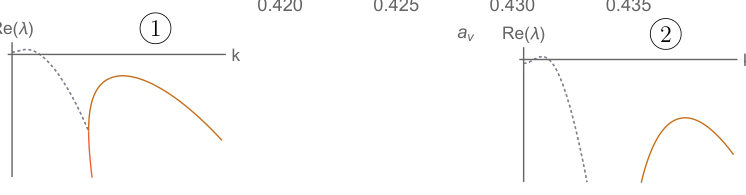
<figcaption class="paper-figure-caption"><b>Fig 3.</b> Figure 3: Bifurcation diagram of model (30)–(32) when f3 (u, k0) = u −u3, kw = 0, and kv = 1 at P, for the parameter values given in (33). The purple vertical line is a subcritical Hopf bifurcation of the steady-state, the magenta curve represents a subcritical wave bifurcation, while the blue curve represents a subcritical Turing bifurcation. Furthermore, the black dotted curve is formed by points in which the conditions for a wave bifurcation are fulfilled for a negative value of k2. Here, (av, D2) ∈[0.42, 0.44] × [0.05, 0.25]. The marked dots are codimension-two bifurcation points and the numbers denote the regions delimited by the bifurcation curves, except the dotted black curve. The...</figcaption>
</figure>
<figure class="paper-figure-card">
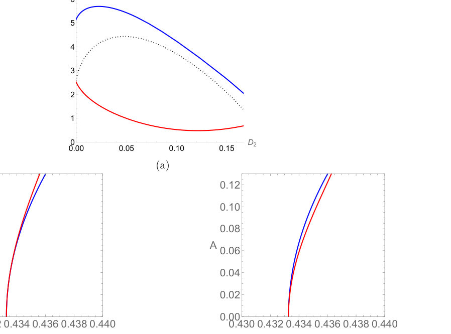
<figcaption class="paper-figure-caption"><b>Fig 4.</b> Figure 4: (a) Third-order coefficients along the wave bifurcation curve shown in Figure 3. The red (resp. blue) curve represents the numerical value of Re  C[3,0] 1   resp. Re  C[3,0] 1 + C[1,2] 1  , while</figcaption>
</figure>
<figure class="paper-figure-card">
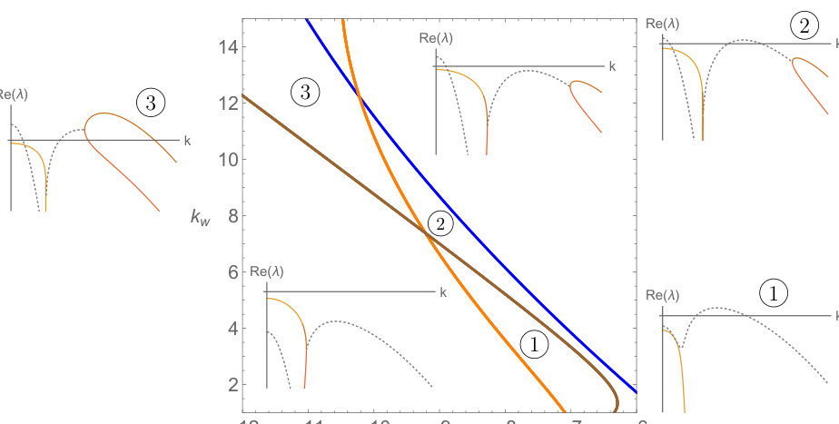
<figcaption class="paper-figure-caption"><b>Fig 5.</b> Figure 5: Bifurcation diagram of system (30)–(32) with f3 (u, k0) = k0 + 2 u −u3, a0 = aw = 0, av = aw = 1, and εv = 1</figcaption>
</figure>
</div>

<p><strong>Summary.</strong> This theoretical paper develops comprehensive mathematical tools to analyze wave bifurcations in complex reaction-diffusion systems. It derives the weakly nonlinear normal form equations up to the fifth order, providing explicit formulas for the coefficients that determine whether the resulting waves are supercritical or subcritical. This work significantly advances the mathematical understanding of pattern formation in non-equilibrium physical models.</p>
<p><strong>Why it may be interesting.</strong> While focused on classical reaction-diffusion systems, the rigorous mathematical machinery of deriving high-order normal forms and analyzing pattern formation stability is highly relevant to understanding the dynamics of open quantum systems or complex many-body dynamics where pattern formation or phase transitions occur.</p>
<details>
<summary>Detailed structure</summary>
<p><strong>Main problem.</strong> The paper aims to derive general amplitude equations for wave bifurcations in reaction-diffusion systems, which are counterparts to Turing instabilities.</p>
<p><strong>Main result.</strong> Complete formulae for the weakly nonlinear normal form coefficients up to order five are derived for both standing and rotating wave solutions in arbitrary n-component systems.</p>
<p><strong>Method.</strong> The analysis employs a multi-scale asymptotic methodology, extending normal-form analysis from Hopf and Turing bifurcations to derive amplitude equations for the system's modes.</p>
<p><strong>Model / system.</strong> The study concerns general n-component reaction-diffusion systems ($\partial_t u = f(u, \mu) + D(\mu) \partial_{xx} u$) exhibiting wave bifurcations, which require at least three components.</p>
<p><strong>Key observables.</strong> The coefficients of the weakly nonlinear normal form (e.g., $C[\cdot]$) and the resulting bifurcation diagrams characterizing the stability and type (super/subcritical) of standing and travelling waves.</p>
<p><strong>Important parameters / regimes.</strong> The number of components ($n \geq 3$), the bifurcation parameter ($\mu$), and the spatial/temporal wave number ($k^*$).</p>
<p><strong>Assumptions / limitations.</strong> The analysis assumes the existence of a stable, isolated homogeneous steady state and relies on non-degeneracy conditions to perform the asymptotic expansions.</p>
<p><strong>Figures summary.</strong> Figure 1 illustrates the difference between dispersion relations for Turing (real eigenvalue) and wave (pure imaginary pair) bifurcations. Figure 2 summarizes the parameter space region showing the bifurcation type (SW/TW) based on cubic coefficients.</p>
<p><strong>Paper structure.</strong> The paper progresses by first establishing the general framework for wave bifurcations, then deriving the normal form equations up to fifth order, and finally analyzing the coefficients to determine the precise nature (supercritical vs. subcritical) of the resulting wave patterns.</p>
</details>
<details>
<summary>Abstract</summary>
<p>A wave bifurcation is the counterpart to a Turing instability in reaction-diffusion systems, but where the critical wavenumber corresponds to a pure imaginary pair rather than a zero temporal eigenvalue. Such bifurcations require at least three components and give rise to patterns that are periodic in both space and time. Depending on boundary conditions, these patterns can comprise either rotating or standing waves. Restricting to systems in one spatial dimension, complete formulae are derived for the evaluation of the coefficients of the weakly nonlinear normal form of the bifurcation up to order five, including those that determine the criticality of both rotating and standing waves. The formulae apply to arbitrary $n$-component systems ($n\geq 3$) and their evaluation is implemented in software which is made available as supplementary material. The theory is illustrated on two different versions of three-component reaction-diffusion models of excitable media that were previously shown to feature super- and subcritical wave instabilities and on a five-component model of two-layer chemical reaction. In each case, two-parameter bifurcation diagrams are produced to illustrate the connection between complex dispersion relations and different types of Hopf, Turing, and wave bifurcations, including the existence of several codimension-two bifurcations.</p>
</details>
<p><sub><a href="#top">↑ back to top</a></sub></p>

<p><a id="paper-2609.27655"></a></p>
<h3 id="shift-register-synchronization-of-dual-wavelength-pulse-trains-in-resonators-with-quadratic-nonlinearity"><a href="http://arxiv.org/abs/2609.27655v1">Shift-register synchronization of dual-wavelength pulse trains in resonators with quadratic nonlinearity</a></h3>
<p><strong>Authors:</strong> Stepan Bogdanov, Anastasiya Bednyakova, Sergei K. Turitsyn<br>
<strong>Type:</strong> theory · <strong>Category:</strong> other · <strong>PDF:</strong> <a href="https://arxiv.org/pdf/2609.27655v1">https://arxiv.org/pdf/2609.27655v1</a><br>
<strong>Analysis basis:</strong> full PDF text, analyzed in chunks
<strong>Topic relevance:</strong> <code>Keldysh / 2PI / non-Gaussian methods</code> <strong>2/5</strong> · <code>driven-dissipative phase transition</code> <strong>2/5</strong> · <code>methods for driven-dissipative</code> <strong>2/5</strong> · <code>interference shaping light</code> <strong>1/5</strong> · <code>non-equilibrium universality</code> <strong>1/5</strong></p>
<div class="figure-strip-hint">↔ Scroll figures horizontally</div>
<div class="paper-figures-scroll">
<figure class="paper-figure-card">
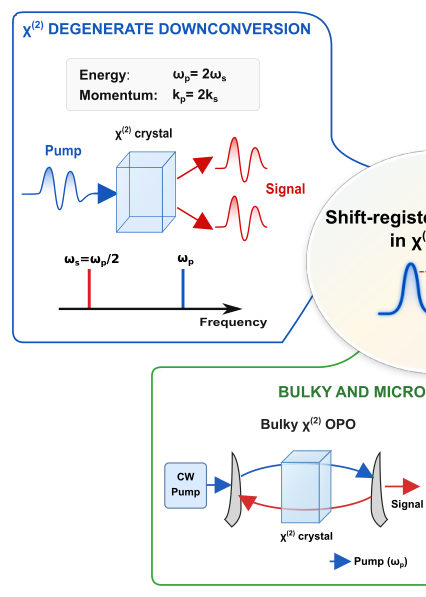
<figcaption class="paper-figure-caption"><b>Fig 1.</b> Figure 1: Concept of shift-register synchronization in a degenerate χ(2) OPO. Quadratic downconversion couples the pump field b at 2ω to the half-harmonic signal field a at ω. Because the two fields propagate with different group velocities, their pulse trains acquire a relative temporal displacement during each cavity round trip. In a shift-register state, the complete intracavity pattern is reproduced after one round trip up to an integer temporal translation of one train relative to the other. The mechanism can, in principle, be implemented in both bulk and integrated quadratic resonators.</figcaption>
</figure>
<figure class="paper-figure-card">
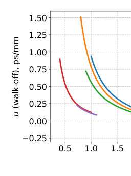
<figcaption class="paper-figure-caption"><b>Fig 2.</b> Figure 2: Linear group-velocity mismatch (walk-off) for representative χ(2) materials (including lithium niobate (LN), lithium tantalate (LT), aluminum nitride (AlN), barium borate (BBO), and lithium triborate (LBO)) in degenerate downconversion as a function of pump wavelength, calculated from published Sellmeier relations. The accessible values span the range required for the shift-register states investigated below, showing that the synchronization conditions are compatible with realistic bulk and integrated quadratic platforms.</figcaption>
</figure>
<figure class="paper-figure-card">
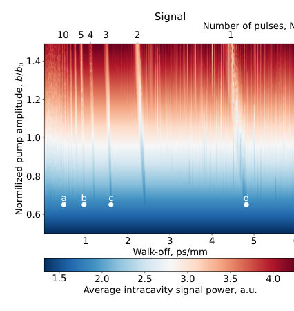
<figcaption class="paper-figure-caption"><b>Fig 3.</b> Figure 3: Numerical synchronization maps obtained by adiabatically varying the normalized input pump amplitude b/b0 for each value of the linear walk-off u. Shown are the intracavity signal (left) and pump (right) powers. Narrow high-power domains correspond to stable shift-register states with different integer numbers N of signal pulses in the cavity and N + M pump pulses. The systematic shift of these domains with pump amplitude demonstrates that the synchronization condition cannot be determined by the linear walk-off alone and indicates a nonlinear renormalization of the effective relative velocity. White markers “a”, “b”, “c”, “d” with corresponding N values 10, 5, 3, 1 indicate...</figcaption>
</figure>
<figure class="paper-figure-card">
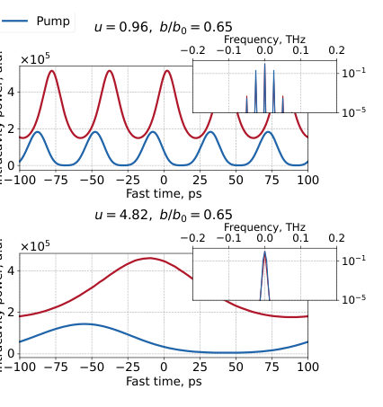
<figcaption class="paper-figure-caption"><b>Fig 4.</b> Figure 4: Representative stationary shift-register states selected from the synchronization domains in Fig. 3, corresponding from upper left to lower right to N = 10, 5, 3, and 1 pulses per cavity round trip. Main panels show the intracavity signal and pump powers versus fast time; insets show the corresponding normalized spectra. As the walk-off increases, the synchronized state reorganizes into progressively smaller integer pulse-number states while preserving regular pulse-train operation.</figcaption>
</figure>
<figure class="paper-figure-card">
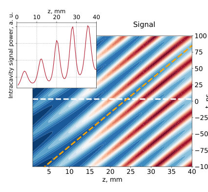
<figcaption class="paper-figure-caption"><b>Fig 5.</b> Figure 5: Intracavity spatiotemporal evolution of the signal (left) and pump (right) in a representative shift-register state at u = 0.9 ps/mm and b/b0 = 1.05. The diagonal pulse trajectories reveal the different effective propagation velocities of the two harmonics (as indicated by their different slopes; the orange line serves to demonstrate that having the same tilt in both plots). Nevertheless, the two pulse trains remain globally synchronized: the cavity contains N = 5 signal pulses and N + M = 6 pump pulses, so that their relative displacement accumulated during one round trip corresponds to one pulse period (M = 1). Insets show cross-sections along the indicated dashed lines.</figcaption>
</figure>
</div>

<p><strong>Summary.</strong> This paper details a shift-register synchronization mechanism for dual-wavelength pulse trains in nonlinear optical resonators. It shows that parametric energy exchange can stabilize this synchronization even when group-velocity mismatch is significant. This mechanism offers a pathway toward advanced photonic applications like frequency combs and optical memories.</p>
<p><strong>Why it may be interesting.</strong> This work bridges nonlinear optics with concepts of discrete state transitions (like shift registers), providing a robust mechanism for controlling complex wave patterns in optical cavities, which has implications for ultrafast photonics.</p>
<details>
<summary>Detailed structure</summary>
<p><strong>Main problem.</strong> The paper introduces and demonstrates a novel shift-register synchronization mechanism for dual-wavelength pulse trains propagating in resonators with quadratic nonlinearity.</p>
<p><strong>Main result.</strong> The synchronization is achieved not through conventional velocity locking, but via continuous parametric energy exchange that modifies the effective walk-off, allowing for deterministic discrete pulse shifts after each cavity round trip.</p>
<p><strong>Method.</strong> The analysis combines coupled-mode equations with the Ikeda-map formalism and employs variational methods to derive reduced dynamical systems for the pulse envelopes.</p>
<p><strong>Model / system.</strong> The system is modeled as a doubly resonant degenerate $\chi^{(2)}$ Optical Parametric Oscillator (OPO) in a resonator, governed by coupled nonlinear wave equations.</p>
<p><strong>Key observables.</strong> Intracavity signal and pump powers, number of pulses ($N$), pulse spacing ($T$), and the effective walk-off ($u_{eff}$).</p>
<p><strong>Important parameters / regimes.</strong> Group-velocity mismatch ($u$), nonlinear coupling ($\kappa$), and the ratio of round-trip times to pulse periods ($M/N$).</p>
<p><strong>Assumptions / limitations.</strong> The analysis often assumes the neglect of chromatic-dispersion terms and treats the pulse trains as periodic with well-separated pulses for variational reduction.</p>
<p><strong>Figures summary.</strong> Figures illustrate the concept of synchronization via temporal displacement, show synchronization domains in parameter space, and depict representative stationary shift-register states for varying pulse numbers.</p>
<p><strong>Paper structure.</strong> The paper progresses from defining the physical system and the synchronization concept, deriving the necessary coupled equations and conservation laws, and finally applying variational and numerical techniques to confirm the nonlinear modification of the walk-off condition.</p>
</details>
<details>
<summary>Abstract</summary>
<p>Self-organization of nonlinear waves underpins phenomena ranging from hydrodynamic pattern formation to optical frequency-comb generation. We introduce and numerically demonstrate a shift-register synchronization mechanism for pulse trains in quadratic nonlinear resonators. The synchronized state persists despite substantial group-velocity mismatch through continuous parametric energy exchange, resulting in deterministic discrete pulse shifts after each cavity round trip. Nonlinear parametric interaction modifies the effective walk-off, allowing the pulse trains to satisfy the shift-register synchronization conditions. The proposed mechanism reveals a previously unexplored synchronization regime in quadratic resonators and provides a route toward multicolour frequency combs, optical memories, and ultrafast photonic information processing.</p>
</details>
<p><sub><a href="#top">↑ back to top</a></sub></p>

<p><a id="paper-2609.28036"></a></p>
<h3 id="general-conditions-for-turing-and-wave-instabilities-in-reaction-diffusion-systems"><a href="http://arxiv.org/abs/2609.28036v1">General conditions for Turing and wave instabilities in reaction-diffusion systems</a></h3>
<p><strong>Authors:</strong> Edgardo Villar-Sepúlveda, Alan R. Champneys<br>
<strong>Type:</strong> theory · <strong>Category:</strong> other · <strong>PDF:</strong> <a href="https://arxiv.org/pdf/2609.28036v1">https://arxiv.org/pdf/2609.28036v1</a><br>
<strong>Analysis basis:</strong> full PDF text, analyzed in chunks
<strong>Topic relevance:</strong> <code>analog quantum simulation</code> <strong>2/5</strong> · <code>Keldysh / 2PI / non-Gaussian methods</code> <strong>1/5</strong> · <code>correlated / nonlocal dissipation</code> <strong>1/5</strong> · <code>driven-dissipative phase transition</code> <strong>1/5</strong> · <code>methods for driven-dissipative</code> <strong>1/5</strong> · <code>non-equilibrium universality</code> <strong>1/5</strong></p>
<div class="figure-strip-hint">↔ Scroll figures horizontally</div>
<div class="paper-figures-scroll">
<figure class="paper-figure-card">
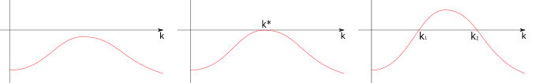
<figcaption class="paper-figure-caption"><b>Fig 1.</b> Fig. 1: Sketches of dispersion relations, that is the locus of the real part of an eigenvalue λ(k), for different parameter values. Upon parameter variation we have: (a) absence of instability; (b) a bifurcation point giving onset to insta- bility; (c) unstable patterns exist for wavenumbers k1 &lt; k &lt; k2. For simplicity we depict only the dispersion curve of a mode for which maxk(Re(λi(k))) is largest.</figcaption>
</figure>
<figure class="paper-figure-card">
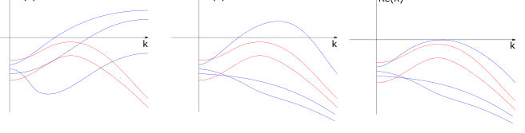
<figcaption class="paper-figure-caption"><b>Fig 2.</b> Fig. 2: Illustrating the main idea of Theorem 5 via sketches of dispersion curves of a five-component system, for three different sets of values of the diffusion rates. In (a) three diffusion rates (corresponding to the blue curves) are zero, while the others are positive. In (b) all diffusion rates are positive and there is an interval of k-values corresponding to a Turing instability. Panel (c) shows the critical situation between cases (a) and (b), which would correspond to a Turing bifurcation.</figcaption>
</figure>
<figure class="paper-figure-card">
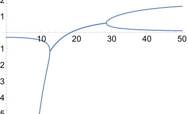
<figcaption class="paper-figure-caption"><b>Fig 3.</b> Fig. 3: Eigenvalues with the largest real parts of the matrix Ju f(P) −k2 D, where Ju f(P) is given by (16), and D = diag (10, 0, 0).</figcaption>
</figure>
<figure class="paper-figure-card">
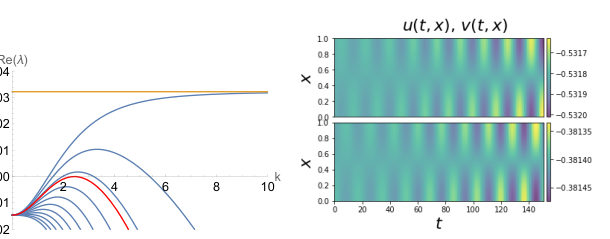
<figcaption class="paper-figure-caption"><b>Fig 4.</b> Fig. 4: (a) Dispersion relation of model (17) at parameter values (20) (av, aw, ϵv, ϵw, a0) = (0.435, 0.5, 0.2, 1, −0.1) and (D1, D2, D3) = (δ, δ, 0.1) as δ varies from 0 to 0.01 in uniform steps. The red line is the dispersion curve for δ = 2.27312 × 10−3, where the wave bifurcation occurs, and the orange line is the straight line Re(λ) = 0.0322485. (b) Simulation of (17) on a 1D domain of length L = 1 with Neumann boundary conditions, for δ = 0.001 and an initial condition that is a perturbation of P proportional to cos(πx) with amplitude 10−5 in all three components.</figcaption>
</figure>
<figure class="paper-figure-card">
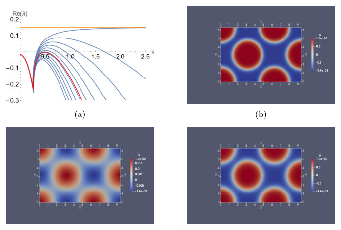
<figcaption class="paper-figure-caption"><b>Fig 5.</b> Fig. 5: (a) Similar to Fig. 4(a) but for (D1, D2, D3) = (δ, 5, δ) and δ vary- ing from 0 to 0.5 in uniform steps; the distinguished (red) curve is for δ = 0.28684, where a Turing bifurcation occurs, and the (orange) straight line is at Re(λ) = 0.151497. (b), (c), (d) variables u, v, w, respectively, at the Turing instability pattern obtained after integrating the system in two spatial dimensions with δ = 0.03. Here, we make a perturbation in all components equally corresponding to wave numbers (kx, ky) = (3, 2) with an amplitude ε = 10−4.</figcaption>
</figure>
</div>

<p><strong>Summary.</strong> This paper provides a comprehensive mathematical theory for determining when stable chemical or biological steady states in reaction-diffusion systems become unstable due to diffusion. It rigorously derives necessary and sufficient conditions for both Turing (stationary pattern) and wave (traveling wave) instabilities. The work is significant for modeling pattern formation in fields ranging from biology to chemical kinetics.</p>
<p><strong>Why it may be interesting.</strong> While the subject matter is far from quantum physics, the rigorous mathematical framework of stability analysis, bifurcation theory, and pattern formation in non-linear PDEs is foundational to many areas of theoretical physics, including quantum field theory and non-equilibrium statistical mechanics.</p>
<details>
<summary>Detailed structure</summary>
<p><strong>Main problem.</strong> The paper aims to provide general necessary and sufficient mathematical conditions for the onset of diffusion-driven instabilities, specifically Turing or wave instabilities, in reaction-diffusion systems.</p>
<p><strong>Main result.</strong> The authors establish general criteria for both Turing (real eigenvalue) and wave (imaginary eigenvalue) bifurcations, providing a constructive method for selecting diffusion constants that induce instability.</p>
<p><strong>Method.</strong> The analysis relies on linear stability theory, examining the dispersion relation $\lambda(k)$ derived from the Jacobian matrix and the diffusion operator. Key techniques involve analyzing limits of the wavenumber $k$ and using matrix determinant properties.</p>
<p><strong>Model / system.</strong> The core model is the reaction-diffusion system $u_t = f(u) + D 
abla^2 u$, where $u$ is the state vector, $f$ is the reaction kinetics, and $D$ is a diagonal diffusion matrix. Examples include malaria dispersion models and coupled Brusselator systems.</p>
<p><strong>Key observables.</strong> The real part of the eigenvalue $  ext{Re}(\lambda(k))$ as a function of the wavenumber $k$, which determines stability ($    ext{Re}(\lambda) &gt; 0$ indicates instability).</p>
<p><strong>Important parameters / regimes.</strong> Diffusion coefficients ($D_i$), system parameters (e.g., $a, b, c, \eta$), and the wavenumber $k$.</p>
<p><strong>Assumptions / limitations.</strong> The analysis primarily assumes diagonal diffusion matrices and is based on linear stability analysis around a homogeneous steady state. Extensions to cross-diffusion or non-sinusoidal modes are noted as future work.</p>
<p><strong>Figures summary.</strong> Figures sketch the dispersion relation $   ext{Re}(\lambda)$ vs. $k^2$, illustrating regimes of stability, the precise point of bifurcation onset, and the range of unstable wavenumbers ($k_1 < k < k_2$).</p>
<p><strong>Paper structure.</strong> The paper develops theory by first establishing general conditions using matrix properties (Lemmas 1-5) for Turing bifurcations, and then applies this framework to specific physical models (like the FitzHugh-Nagumo or Brusselator) to illustrate both Turing and wave instability mechanisms.</p>
</details>
<details>
<summary>Abstract</summary>
<p>Necessary and sufficient conditions are provided for a diffusion-driven instability of a stable equilibrium of a reaction-diffusion system with $n$ components and a diagonal diffusion matrix. These can be either Turing or wave instabilities. Known necessary and sufficient conditions are reproduced for there to exist diffusion rates that cause a Turing bifurcation of a stable homogeneous state in the absence of diffusion. The method of proof here though, which is based on a study of dispersion relations in the contrasting limits in which the wavenumber tends to zero and to $\infty$, gives a constructive method for choosing diffusion constants. The results are illustrated on a model for the dispersion of malaria, a 3-component FitzHugh-Nagumo-like model proposed to study excitable wavetrains, and for two different coupled Brusselator systems with 4 components</p>
</details>
<p><sub><a href="#top">↑ back to top</a></sub></p>

<p><a id="paper-2609.27663"></a></p>
<h3 id="multiprecision-computation-of-bright-and-dark-solitons-in-the-discrete-nonlinear-schrodinger-equation"><a href="http://arxiv.org/abs/2609.27663v1">Multiprecision computation of bright and dark solitons in the discrete nonlinear Schrödinger equation</a></h3>
<p><strong>Authors:</strong> Rudy Kusdiantara, Farrell T. Adriano, Hadi Susanto<br>
<strong>Type:</strong> theory · <strong>Category:</strong> numerical methods · <strong>PDF:</strong> <a href="https://arxiv.org/pdf/2609.27663v1">https://arxiv.org/pdf/2609.27663v1</a><br>
<strong>Analysis basis:</strong> full PDF text, analyzed in chunks
<strong>Topic relevance:</strong> <code>analog quantum simulation</code> <strong>2/5</strong> · <code>Frenkel-Kontorova</code> <strong>1/5</strong> · <code>Keldysh / 2PI / non-Gaussian methods</code> <strong>1/5</strong> · <code>methods for driven-dissipative</code> <strong>1/5</strong></p>
<div class="figure-strip-hint">↔ Scroll figures horizontally</div>
<div class="paper-figures-scroll">
<figure class="paper-figure-card">
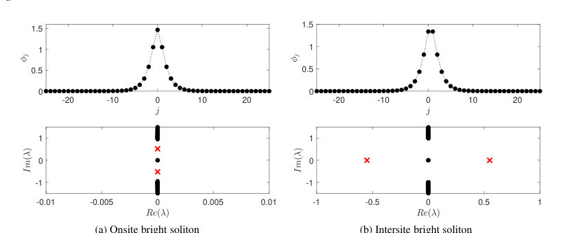
<figcaption class="paper-figure-caption"><b>Fig 1.</b> Fig. 1: Profiles of discrete bright solitons obtained from the stationary DNLS equation (3) with focusing nonlinearity (σ = +1) and frequency ω = 1, together with the spectra of the corresponding linear operator (11) in the complex plane; the symbols mark the eigenvalues of interest. Results are shown for h = 0.7: (a) onsite soliton; (b) intersite soliton.</figcaption>
</figure>
<figure class="paper-figure-card">
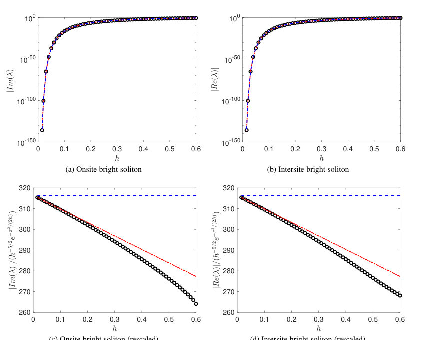
<figcaption class="paper-figure-caption"><b>Fig 2.</b> Fig. 2: Spectra of discrete bright solitons. Black open circles: numerical eigenvalues; blue dashed lines: exponential asymptotics of Adriano et al. [9]; red dash-dotted curves: higher-order corrections of Lustri et al. [10]. (a) Onsite branch: |Im λ| versus h on a logarithmic vertical scale. The internal mode remains purely imaginary and exponentially small as h →0. (b) Intersite branch: |Re(λ)| versus h (log scale). A real pair ±Re(λ) persists for all h, indicating a weak structural instability with exponentially small growth rate. (c)-(d) Rescaled data: eigenvalues divided by h−5/2 e−π2/(2h), showing agreement with the predicted prefactors.</figcaption>
</figure>
<figure class="paper-figure-card">
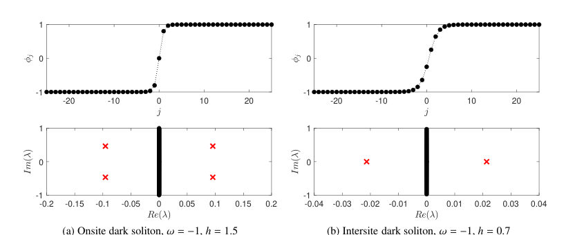
<figcaption class="paper-figure-caption"><b>Fig 3.</b> Fig. 3: The same as Figure 1, but for discrete dark solitons obtained from the stationary equation (3) with defocusing nonlinearity (σ = −1) and frequency ω = −1. (a) Onsite case (h = 1.5); (b) intersite case (h = 0.7).</figcaption>
</figure>
<figure class="paper-figure-card">
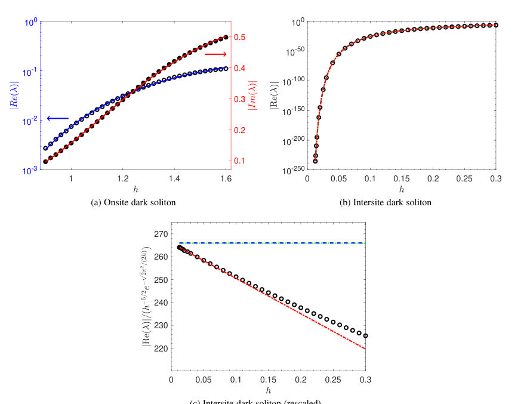
<figcaption class="paper-figure-caption"><b>Fig 4.</b> Fig. 4: Spectra of discrete dark solitons and comparison with asymptotic results. (a) Onsite branch: blue open circles show Re(λ) (left axis), and red dots show Im(λ) (right axis) versus h. Green and cyan curves are exponential fits of the form (15) with parameters given in the text, confirming the exponentially small instability growth and corresponding prefactors. (b) Intersite branch: black open circles show Re(λ) versus h on a logarithmic vertical scale. The green dotted curve is the factor-of-two-corrected prediction of Adriano et al. [9]. The blue dashed curve shows the leading-order term of the Lustri et al. formula, while the red dash-dotted curve shows the full next-order formula...</figcaption>
</figure>
<figure class="paper-figure-card">
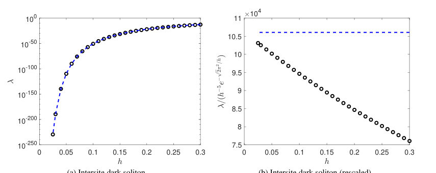
<figcaption class="paper-figure-caption"><b>Fig 5.</b> Fig. 5: Spectra from the corresponding parabolic (gradient-flow) problem for the intersite dark soliton. (a) Magnitude |λ| of the negative intersite eigenvalue of −L(h) + versus lattice spacing h on a logarithmic vertical scale. (b) Same magnitude rescaled by h−5 exp(− √</figcaption>
</figure>
</div>

<p><strong>Summary.</strong> This work develops a high-precision computational framework to analyze the spectral stability of solitons in the discrete nonlinear Schrödinger equation. By employing multiprecision arithmetic, the authors accurately resolve exponentially small eigenvalues, determining that onsite bright solitons are stable while other configurations are unstable. This highlights the computational challenges in studying nonlinear wave dynamics near continuum limits.</p>
<p><strong>Why it may be interesting.</strong> The rigorous computational techniques developed for handling exponentially small eigenvalues in nonlinear lattice systems are highly relevant for analyzing stability in quantum optics and many-body systems where continuum limits are approached.</p>
<details>
<summary>Detailed structure</summary>
<p><strong>Main problem.</strong> The paper investigates the spectral stability of bright and dark solitons governed by the discrete nonlinear Schrödinger (DNLS) equation.</p>
<p><strong>Main result.</strong> Onsite bright solitons are found to be spectrally stable, while intersite bright and all dark solitons are unstable. The study demonstrates the necessity of multiprecision arithmetic to resolve exponentially small eigenvalues.</p>
<p><strong>Method.</strong> A computational framework combining multiprecision arithmetic, an exact Jacobian for the stationary problem, and a squared-operator formulation is developed for spectral analysis.</p>
<p><strong>Model / system.</strong> The primary model is the one-dimensional DNLS equation, which describes nonlinear wave phenomena in discrete lattices. The continuous limit ($h 	o 0$) corresponds to the standard NLS equation.</p>
<p><strong>Key observables.</strong> Spectral eigenvalues ($\lambda$) determining stability, and the profiles of onsite/intersite bright and dark solitons.</p>
<p><strong>Important parameters / regimes.</strong> Lattice spacing ($h$), nonlinearity parameter ($\sigma$), and the required working precision (MP).</p>
<p><strong>Assumptions / limitations.</strong> The analysis assumes that standard double precision fails to resolve the stability eigenvalues, necessitating high-precision computation.</p>
<p><strong>Figures summary.</strong> Figures illustrate the profiles and spectra for bright solitons (onsite/intersite) and dark solitons, confirming asymptotic predictions for bright solitons.</p>
<p><strong>Paper structure.</strong> The paper first establishes the DNLS model and the standing wave ansatz. It then details the numerical methods, emphasizing the use of multiprecision arithmetic to solve the nonlinear system and compute the spectrum via the squared-operator formulation.</p>
</details>
<details>
<summary>Abstract</summary>
<p>We study the spectral stability of bright and dark solitons in the discrete nonlinear Schrödinger (DNLS) equation using multiprecision arithmetic. The eigenvalues governing stability are exponentially small in the lattice spacing and cannot be resolved with standard double precision. To address this, we develop a computational framework combining multiprecision arithmetic, an exact Jacobian for the stationary problem, and a squared-operator formulation for spectral analysis. This enables accurate resolution of exponentially small eigenvalues and direct comparison with exponential-asymptotic predictions. Our results show that onsite bright solitons are spectrally stable, whereas intersite bright solitons and both onsite and intersite dark solitons are unstable. Bright solitons require only a few eigenvalues and allow efficient large-scale computations, while dark solitons demand higher precision due to their proximity to the continuous spectrum. Simulations up to \(N=65{,}250\) grid points (31.7 GB RAM) highlight the necessity of multiprecision arithmetic for capturing beyond-all-orders spectral effects.</p>
</details>
<p><sub><a href="#top">↑ back to top</a></sub></p>

<p><a id="paper-2609.27672"></a></p>
<h3 id="direct-observation-of-the-electronic-structure-of-even-layer-puckered-snte-monolayer-films-on-graphene"><a href="http://arxiv.org/abs/2609.27672v1">Direct observation of the electronic structure of even-layer puckered SnTe monolayer films on graphene</a></h3>
<p><strong>Authors:</strong> Satoru Ichinokura, Shunsuke Tsuda, Kiyohisa Tanaka, Koichiro Yaji<br>
<strong>Type:</strong> both · <strong>Category:</strong> other · <strong>PDF:</strong> <a href="https://arxiv.org/pdf/2609.27672v1">https://arxiv.org/pdf/2609.27672v1</a><br>
<strong>Analysis basis:</strong> full PDF text, analyzed in chunks
<strong>Topic relevance:</strong> <code>Keldysh / 2PI / non-Gaussian methods</code> <strong>2/5</strong> · <code>quantum measurements</code> <strong>2/5</strong></p>
<div class="figure-strip-hint">↔ Scroll figures horizontally</div>
<div class="paper-figures-scroll">
<figure class="paper-figure-card">
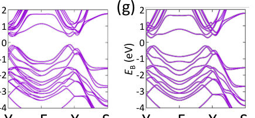
<figcaption class="paper-figure-caption"><b>Fig 1.</b> FIG. 1. Structural and electronic reference models for ul- trathin SnTe. (a),(b) Top and side views of the 2UC puck- ered structure. (c) Corresponding pseudotetragonal Brillouin zone. (d),(e) Calculated band structures of puckered and non- puckered 1UC SnTe. (f),(g) Calculated band structures of puckered and nonpuckered 2UC SnTe.</figcaption>
</figure>
<figure class="paper-figure-card">
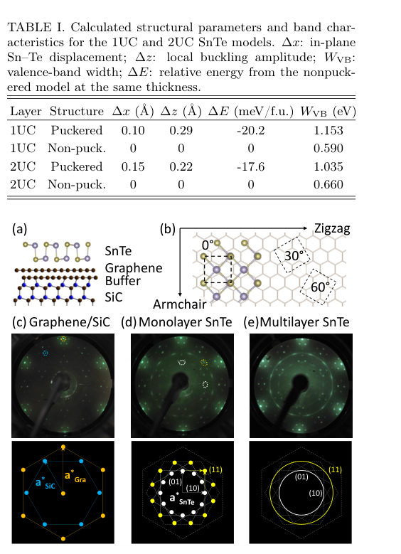
<figcaption class="paper-figure-caption"><b>Fig 2.</b> FIG. 2. LEED characterization of graphene-supported ultra- thin SnTe. (a) Schematic side view of the sample structure consisting of SnTe on graphene/buffer/SiC. (b) In-plane ori- entation relationship between the pseudotetragonal SnTe lat- tice and the graphene lattice, illustrating domains rotated by 0◦, 30◦, and 60◦. (c)–(e) LEED patterns of Graphene/SiC, monolayer SnTe, and multilayer SnTe, respectively, together with schematic reciprocal-space patterns shown below.</figcaption>
</figure>
<figure class="paper-figure-card">
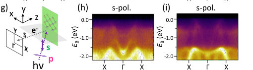
<figcaption class="paper-figure-caption"><b>Fig 3.</b> FIG. 3. Momentum-space electronic structure of graphene- supported ultrathin SnTe. (a)–(c) Constant-energy maps near the Fermi level for Graphene/SiC, monolayer SnTe, and multilayer SnTe, respectively, measured by momentum mi- croscopy. In (b) and (c), pseudotetragonal Brillouin zones of SnTe rotated by 0◦, 30◦, and 60◦are overlaid. (d) Calculated band structure of 1UC puckered SnTe for the experimentally constrained structure with a = b = 4.49 Å and a buckling amplitude of 0.13 Å, with marker size and color represent- ing the Te pz and px + py orbital projections. (e),(h) Mono- layer ARPES spectra measured along X–Γ–X with p- and s-polarized light, respectively. (f),(i) Corresponding...</figcaption>
</figure>
<figure class="paper-figure-card">

<figcaption class="paper-figure-caption"><b>Fig 4.</b> FIG. 4. Thickness-dependent core-level spectra and graphene- interface signatures in graphene-supported ultrathin SnTe. (a),(b) Te 4d and Sn 4d core-level spectra for monolayer and multilayer SnTe. (c),(d) ARPES spectra near the graphene K point before and after monolayer SnTe growth. The solid lines indicate EDCs taken at K. (e) Schematic of the graphene Brillouin zone indicating the K point. The navy line denotes the momentum cut used for the ARPES measurements in (c) and (d). (f) Schematic illustration of the proposed interfacial electrostatic picture.</figcaption>
</figure>
</div>

<p><strong>Summary.</strong> This work provides direct spectroscopic evidence that monolayer SnTe on graphene adopts a puckered electronic structure, contradicting simpler square-flat models. By combining ARPES with DFT, the authors quantify the substrate's influence, showing graphene renormalizes the material's structural buckling amplitude. This establishes a crucial understanding of interface-stabilized 2D electronic properties.</p>
<p><strong>Why it may be interesting.</strong> While focused on solid-state materials, the detailed understanding of orbital hybridization, spin-orbit coupling effects, and the emergence of quantum confinement/interface effects in 2D materials is highly relevant to designing novel quantum electronic components.</p>
<details>
<summary>Detailed structure</summary>
<p><strong>Main problem.</strong> The study aims to directly observe and determine the electronic structure of monolayer SnTe films grown on graphene, specifically resolving whether the structure is puckered or idealized as square-flat.</p>
<p><strong>Main result.</strong> The electronic structure is confirmed to be consistent with a puckered even-layer biatomic-layer building block, and graphene actively modifies this structure by renormalizing the buckling amplitude.</p>
<p><strong>Method.</strong> The research combines Angle-Resolved Photoemission Spectroscopy (ARPES) measurements with Density Functional Theory (DFT) calculations, supplemented by LEED and momentum microscopy.</p>
<p><strong>Model / system.</strong> The system involves SnTe films (monolayer to multilayer) grown epitaxially on graphene/SiC substrates. The theoretical modeling compares puckered vs. non-puckered structural models (1UC/2UC) to reproduce experimental electronic features.</p>
<p><strong>Key observables.</strong> Electronic band dispersion, polarization dependence, valence-band width, and the substrate-renormalized buckling amplitude ($\Delta z$).</p>
<p><strong>Important parameters / regimes.</strong> The monolayer limit is characterized by a specific, reduced buckling amplitude ($\Delta z = 0.13$ Å), which is crucial for matching the observed valence-band width.</p>
<p><strong>Assumptions / limitations.</strong> The analysis relies on the assumption that the observed electronic structure is best described by the puckered model, and that the DFT calculations accurately capture the substrate-induced renormalization effects.</p>
<p><strong>Figures summary.</strong> Figures show LEED patterns confirming domain structure, momentum-space maps illustrating hole pockets, and ARPES spectra demonstrating band dispersion that matches DFT calculations for the puckered structure.</p>
<p><strong>Paper structure.</strong> The paper progresses by first establishing the necessity of the puckered model over the flat model, then using ARPES/momentum microscopy to characterize the monolayer state, and finally comparing this to multilayer films to track thickness evolution toward a bulk-like state.</p>
</details>
<details>
<summary>Abstract</summary>
<p>We report a direct observation of the electronic structure of monolayer SnTe on graphene by angle-resolved photoemission spectroscopy. By combining low-energy electron diffraction, momentum microscopy, core-level spectroscopy, and first-principles calculations, we show that the observed monolayer-limit electronic structure is consistent with a puckered even-layer biatomic-layer building block rather than a nonpuckered square-flat structure. The observed band dispersion and its polarization dependence are reproduced by a puckered structure with a substrate-renormalized buckling amplitude. We further show that graphene actively interacts with ultrathin SnTe by selecting its in-plane orientational texture, renormalizing the buckling amplitude, and modifying the local interfacial electrostatic environment in the monolayer limit. In comparison, multilayer SnTe exhibits a more ringlike momentum-space distribution, interlayer-split valence bands, and a stronger p-type character, revealing the onset of thickness evolution from an interface-stabilized puckered ultrathin limit toward a more bulklike state.</p>
</details>
<p><sub><a href="#top">↑ back to top</a></sub></p>

<p><a id="paper-2609.28168"></a></p>
<h3 id="larger-physical-volume-and-bounds-on-the-number-of-matter-fields-in-noncompact-gauge-theories-on-a-lattice"><a href="http://arxiv.org/abs/2609.28168v1">Larger physical volume and bounds on the number of matter fields in noncompact gauge theories on a lattice</a></h3>
<p><strong>Authors:</strong> Fabrizio Palumbo<br>
<strong>Type:</strong> theory · <strong>Category:</strong> other · <strong>PDF:</strong> <a href="https://arxiv.org/pdf/2609.28168v1">https://arxiv.org/pdf/2609.28168v1</a><br>
<strong>Analysis basis:</strong> full PDF text, analyzed in chunks
<strong>Topic relevance:</strong> <code>Keldysh / 2PI / non-Gaussian methods</code> <strong>2/5</strong> · <code>analog quantum simulation</code> <strong>2/5</strong></p>
<div class="figure-strip-hint">↔ Scroll figures horizontally</div>
<div class="paper-figures-scroll">
<figure class="paper-figure-card">

<figcaption class="paper-figure-caption"><b>Fig 1.</b> Low-resolution page preview, page 2</figcaption>
</figure>
<figure class="paper-figure-card">

<figcaption class="paper-figure-caption"><b>Fig 2.</b> Low-resolution page preview, page 3</figcaption>
</figure>
<figure class="paper-figure-card">

<figcaption class="paper-figure-caption"><b>Fig 3.</b> Low-resolution page preview, page 4</figcaption>
</figure>
<figure class="paper-figure-card">

<figcaption class="paper-figure-caption"><b>Fig 4.</b> Low-resolution page preview, page 5</figcaption>
</figure>
<figure class="paper-figure-card">

<figcaption class="paper-figure-caption"><b>Fig 5.</b> Low-resolution page preview, page 6</figcaption>
</figure>
</div>

<p><strong>Summary.</strong> This work analyzes noncompact gauge theories on a lattice to study the effective lattice spacing ratio, R. Using perturbative methods, the authors find that R is bounded, reaching a maximum of sqrt(2) for pure gauge theories. The inclusion of matter fields modifies this ratio, leading to constraints on the allowed difference between scalar and spinor degrees of freedom.</p>
<p><strong>Why it may be interesting.</strong> While focused on lattice gauge theory, the rigorous derivation of bounds on field content and the study of effective parameters in a lattice regularization scheme are fundamental theoretical tools applicable to many-body physics models.</p>
<details>
<summary>Detailed structure</summary>
<p><strong>Main problem.</strong> The paper investigates the effective lattice spacing ratio (R) in noncompact gauge theories, determining how this ratio behaves when considering the inclusion of matter fields and establishing bounds on the number of matter fields.</p>
<p><strong>Main result.</strong> For pure SU(2) and Abelian theories, the ratio R is found to increase up to a maximum value of sqrt(2). Including matter fields causes R to either increase or decrease, depending on the difference between scalar and spinor degrees of freedom, subject to specific bounds.</p>
<p><strong>Method.</strong> The analysis employs perturbative evaluation of the effective lattice spacing using an expansion in the Planck constant, alongside functional methods to determine the effective potential.</p>
<p><strong>Model / system.</strong> The study focuses on noncompact gauge theories formulated on a lattice, specifically examining pure SU(2) and Abelian gauge theories, and extending the analysis to include scalar ($\phi$) and spinor ($\psi$) matter fields.</p>
<p><strong>Key observables.</strong> The ratio R of effective non-compact to compact lattice spacing, and the effective potential V.</p>
<p><strong>Important parameters / regimes.</strong> Gauge coupling constant (g), Planck constant (hbar), number of scalar ($
u_s$) and spinor ($
u_f$) degrees of freedom, and the parameter $\sigma$.</p>
<p><strong>Assumptions / limitations.</strong> The analysis is perturbative and restricted to $N_c=2$ for SU(2), with limitations noted regarding comparison to the Veneziano limit or asymptotic safety.</p>
<p><strong>Paper structure.</strong> The paper builds from analyzing the pure gauge theory in the continuum limit, deriving the effective potential, and then incorporating matter fields to derive bounds on the degrees of freedom and the behavior of the ratio R in different dimensions (4D vs 3D).</p>
</details>
<details>
<summary>Abstract</summary>
<p>The work was motivated by the numerical result that in a pure SU(2) gauge theory the ratio R of the effective non-compact and compact lattice spacing is larger than 1 and increasing with decreasing gauge coupling, as well as the expectation that it should further increase extending the parameter space. This means that with a noncompact regularization, at given number of lattice sites and comparable scaling, one can obtain a larger physical volume, whose importance for the control of size effects has long been known. We confirm qualitatively results and expectation by a perturbative evaluation of the effective lattice spacing in an expansion in the Plank constant of non-compact pure SU(2) and Abelian gauge theories, but we find in addition that R reaches the maximum value of sqrt(2). Including matter fields we find that R increases ( still up to sqrt(2) ) or decreases depending on the difference between the number of scalar and spinor degrees of freedom, and there are bounds on such a difference.</p>
</details>
<p><sub><a href="#top">↑ back to top</a></sub></p>

<p><a id="paper-2609.28042"></a></p>
<h3 id="theory-of-optical-alignment-and-orientation-of-excitons-in-an-ensemble-of-semiconductor-nanoplatelets"><a href="http://arxiv.org/abs/2609.28042v1">Theory of optical alignment and orientation of excitons in an ensemble of semiconductor nanoplatelets</a></h3>
<p><strong>Authors:</strong> O. O. Druzhinina, A. V. Rodina<br>
<strong>Type:</strong> theory · <strong>Category:</strong> other · <strong>PDF:</strong> <a href="https://arxiv.org/pdf/2609.28042v1">https://arxiv.org/pdf/2609.28042v1</a><br>
<strong>Analysis basis:</strong> full PDF text, analyzed in chunks
<strong>Topic relevance:</strong> <code>Tavis-Cummings &amp; cavity-many-emitter</code> <strong>1/5</strong> · <code>analog quantum simulation</code> <strong>1/5</strong> · <code>correlated / nonlocal dissipation</code> <strong>1/5</strong> · <code>driven-dissipative phase transition</code> <strong>1/5</strong> · <code>interference shaping light</code> <strong>1/5</strong> · <code>methods for driven-dissipative</code> <strong>1/5</strong> · <code>quantum measurements</code> <strong>1/5</strong></p>
<div class="figure-strip-hint">↔ Scroll figures horizontally</div>
<div class="paper-figures-scroll">
<figure class="paper-figure-card">

<figcaption class="paper-figure-caption"><b>Fig 1.</b> Figure 1. (a) Horizontally oriented NPLs with the c-axis perpendicular to the substrate. (b) An ensemble of NPLs in the experimental geometry: kin and kout are the wave vectors of the incident and registered light and B is the external magnetic field directed along the z-axis of the laboratory frame and parallel to the c-axis. Linear polarization is registered in the axes x, y and rotated by 45◦around z-axis x′, y′ axes. (c) A scheme of a single NPL with its own axes Z ∥z and X, Y rotated by the angle −α with respect to x, y around z. (d) A scheme of a single NPL with internal in-plane magnetic field b directed by angle φ with respect to the X-axis.</figcaption>
</figure>
<figure class="paper-figure-card">

<figcaption class="paper-figure-caption"><b>Fig 2.</b> Figure 2. (a) A scheme of the bright |A⟩and dark |F⟩exciton levels split by ∆EAF in zero magnetic field, with the possible transitions between them. ΓA and ΓF denote the bright and dark exciton recombination rates. (b) Schematic evolution of the exciton states in the Faraday magnetic field from the states |X⟩, |Y ⟩of the bright exciton (split by the energy ¯hΩX in zero field) and states |FX⟩, |FY ⟩of the dark exciton (split by the energy ¯hΩF X) into states | + 1⟩, | −1⟩(split by the energy ¯hΩA) and | + 2⟩, | −2⟩(split by the energy ¯hΩF ), respectively, in the case of gA &gt; 0 and gF &gt; 0. Orange (violet) arrows show the longitudinal spin relaxation between split states of the bright (dark)...</figcaption>
</figure>
<figure class="paper-figure-card">

<figcaption class="paper-figure-caption"><b>Fig 3.</b> Figure 3. (a) A scheme of the linear polarization P l 0 conversion in the bright exciton into detectable effects of optical alignment P l l (marked in orange) and rotation of the linear polarization plane P l l′ (marked in green) for the NPL oriented at the angle α (Fig. 1(b)). (b) Geometry of the optical alignment effect registration from the isotropically oriented NPL ensemble. (c) A scheme of the transfer of the linearly polarized pseudospin components from the bright to dark exciton and its further contribution to the linearly polarized light emission. The angles φ0 and φ (Fig. 1(d)) correspond to the direction of the magnetic field b acting in the polarization transfer and radiation,...</figcaption>
</figure>
<figure class="paper-figure-card">

<figcaption class="paper-figure-caption"><b>Fig 4.</b> Figure 4. Bright A and dark F excitons relative intensities shown by orange and purple lines, respectively, for the case of τA = 1.4 ns (a) in cw regime as function of the ratio ΓA/γ0, and (b) as function of time after pulsed excitation for ΓA/γ0 = 0.3 (dashed lines) [11] and ΓA/γ0 = 2.5 (solid lines) [38].</figcaption>
</figure>
<figure class="paper-figure-card">

<figcaption class="paper-figure-caption"><b>Fig 5.</b> Figure 5. Time dependences in different magnetic fields of (a) the optical alignment effect P l l , (d) the linear polarization plane rotation P l l′, (g) the optical orientation effect P c c , (j) the magnetic-field-induced circular polarization P B c . The time-dependence decomposition into the contributions of the bright and dark excitons for (b) P l l in B = 0 T, (e) P l l′ in B = 6 T, (h) P c c in B = 6 T, (k) P B c in B = 6 T. Faraday magnetic field dependence and its analogous decomposition of (c) P l l , (f) P l l′, (i) P c c , (l) P B c . The parameters used are listed in Table I.</figcaption>
</figure>
</div>

<p><strong>Summary.</strong> This paper presents a comprehensive theory for understanding how excitons align and orient themselves in semiconductor nanoplatelets. By modeling the coupling between bright and dark exciton states using a pseudospin formalism, the authors predict polarization signatures observable in photoluminescence. This work is crucial for controlling and characterizing spin-related quantum phenomena in solid-state nanostructures.</p>
<p><strong>Why it may be interesting.</strong> This work is highly relevant to quantum optics and open quantum systems because it models spin dynamics and polarization transfer in solid-state quantum emitters (excitons) under external fields, which is a core topic in quantum light sources.</p>
<details>
<summary>Detailed structure</summary>
<p><strong>Main problem.</strong> The paper develops a theoretical framework to describe the optical alignment and orientation effects of excitons within single and ensemble semiconductor nanoplatelets (NPLs). It specifically models the interplay between bright and dark exciton states.</p>
<p><strong>Main result.</strong> The theory predicts distinct symmetries for the optical response ($C_2$ for a single NPL and $C_{\infty}$ for the ensemble) and shows how bright-to-dark exciton coupling allows for the observation of dark exciton optical alignment.</p>
<p><strong>Method.</strong> The authors use a density matrix formalism applied to two interacting pseudospins (bright and dark excitons) to calculate time-dependent and steady-state polarized photoluminescence.</p>
<p><strong>Model / system.</strong> The system is semiconductor nanoplatelets (e.g., CdSe/CdS core/shell) whose excitons are modeled using a pseudospin formalism. The Hamiltonian accounts for exchange interactions and Zeeman splitting, while the polarization is analyzed using Stokes parameters.</p>
<p><strong>Key observables.</strong> Polarized photoluminescence (PL), Stokes parameters ($P_l, P_{l'}, P_c$), and the degree of exciton optical alignment/orientation.</p>
<p><strong>Important parameters / regimes.</strong> Low temperature regime, Faraday magnetic field, and the strength of the electron-hole exchange interaction.</p>
<p><strong>Assumptions / limitations.</strong> Assumes an isotropic distribution of in-plane NPL edge orientations in the ensemble and treats the system in the linear optical response regime.</p>
<p><strong>Figures summary.</strong> Figures illustrate the geometry of NPLs (single and ensemble), the axes used for polarization analysis, and the energy splitting/pseudospin evolution in a magnetic field.</p>
<p><strong>Paper structure.</strong> The paper builds from defining the physical system and the need for the theory, developing the pseudospin formalism for bright/dark excitons, deriving the polarization response equations, and finally applying these to analyze specific effects like alignment and ensemble averaging.</p>
</details>
<details>
<summary>Abstract</summary>
<p>We present the theory of exciton optical alignment and optical orientation effects in a single semiconductor nanoplatelet (NPL) and in an ensemble of NPLs. The theoretical model is developed to take into account the emission from both bright and dark exciton states in the case of strong electron-hole exchange interaction and an isotropic distribution of in-plane orientations of the NPLs' edges with respect to the linear polarization axis. The conditions for the linear optical response regime on the polarized resonant excitation of the bright exciton are considered, and the steady-state and time-dependent expressions for polarized photoluminescence are presented for the low temperature case in the Faraday magnetic field at normal incidence. The symmetry of the obtained optical response corresponds to the $C_{2}$ point group for the single NPL and the $C_{\infty}$ point group for the NPL ensemble. The bright-to-dark exciton coupling mechanism allowing one to observe the optical alignment of the dark exciton is considered. The example calculations of the effects are presented for the parameters close to those of CdSe/CdS core/shell NPLs. The effect of the fluctuations in the exciton parameters in the ensemble on the polarization dephasing in the transverse effective magnetic field is demonstrated.</p>
</details>
<p><sub><a href="#top">↑ back to top</a></sub></p>

<p><a id="paper-2609.28346"></a></p>
<h3 id="morphological-evolution-of-an-au-crystalline-domain-in-a-nano-particle-investigated-by-bragg-coherent-diffraction-imaging"><a href="http://arxiv.org/abs/2609.28346v1">Morphological evolution of an Au crystalline domain in a nano-particle investigated by Bragg coherent diffraction imaging</a></h3>
<p><strong>Authors:</strong> Seonghyun Han, Saehyun Kang, Ouyoung Kwon, Wonsuk Cha, Hyon Chol Kang, Chan Kim, Do Young Noh<br>
<strong>Type:</strong> experiment · <strong>Category:</strong> other · <strong>PDF:</strong> <a href="https://arxiv.org/pdf/2609.28346v1">https://arxiv.org/pdf/2609.28346v1</a><br>
<strong>Analysis basis:</strong> full PDF text, analyzed in chunks
<strong>Topic relevance:</strong> <code>Keldysh / 2PI / non-Gaussian methods</code> <strong>1/5</strong> · <code>analog quantum simulation</code> <strong>1/5</strong> · <code>methods for driven-dissipative</code> <strong>1/5</strong> · <code>non-equilibrium universality</code> <strong>1/5</strong> · <code>quantum measurements</code> <strong>1/5</strong> · <code>scars &amp; prethermalization</code> <strong>1/5</strong></p>
<div class="figure-strip-hint">↔ Scroll figures horizontally</div>
<div class="paper-figures-scroll">
<figure class="paper-figure-card">

<figcaption class="paper-figure-caption"><b>Fig 1.</b> FIG. 1. Bragg coherent diffraction imaging setup. A coher- ent X-ray beam, focused by a Kirkpatrick–Baez (KB) mirror, illuminates an Au nanocrystal satisfying the Bragg condition. The diffraction signal is collected during an ω-scan to enable 3D image reconstruction of the nanocrystal.</figcaption>
</figure>
<figure class="paper-figure-card">

<figcaption class="paper-figure-caption"><b>Fig 2.</b> FIG. 2. (a) 3D coherent diffraction profiles around the Au(111) Bragg peak at 400 ◦C, 600 ◦C, and 635 ◦C. The Qx–Qz and Qx–Qy cross-sections of the 3D diffraction pat- terns at each temperature are shown. At 635 ◦C, the fringe patterns corresponding to each plane become prominent. (b) Temperature-dependent line profiles along the in-plane direc- tion (Qx–y broad direction). The profile exhibits a double- peak structure at lower temperatures; however, as the tem- perature increases beyond 600 ◦C, it changes to a single-peak profile. (c) Temperature-dependent XRD profile widths in the Qz (blue) Qx–y broad (black),and Qx–y narrow (red) di- rections.</figcaption>
</figure>
<figure class="paper-figure-card">

<figcaption class="paper-figure-caption"><b>Fig 3.</b> FIG. 4. Auto-correlation function (ACF) obtained from 3D coherent XRD. This is a slice plane corresponding to the Qx–Qy plane. The red dashed line indicates the boundary where the ACF drops to 1/e. The color scale was set to a maximum of 0.5. The domain morphology can be roughly identified from the ACF. Initially, it is elongated and gradu- ally thickens from 625 ◦C. At 625 ◦C, there is a dynamics that changes over time as atoms gradually attach and thicken.</figcaption>
</figure>
<figure class="paper-figure-card">

<figcaption class="paper-figure-caption"><b>Fig 4.</b> FIG. 3. (a) Pearson correlation map calculated from 3D diffraction datasets acquired during in-situ annealing. The map illustrates the correlation of 3D XRD patterns as a func- tion of temperature change and experimental time within the same temperature range. The diagonal represents the self- correlation, which is equal to 1. (b) Line profile of the Pearson correlation coefficient along the red line shown in (a). Two major changes are observed at 600 ◦C and 625 ◦C. After the temperature is raised to 625 ◦C, the correlation coefficient changes continuously.</figcaption>
</figure>
<figure class="paper-figure-card">

<figcaption class="paper-figure-caption"><b>Fig 5.</b> FIG. 5. (a) 3D rendering of BCDI images acquired at various annealing temperatures. For each temperature, the recon- struction was performed using a diffraction dataset acquired after the system reached a stabilized state. (b) Domain mor- phology resembling a truncated octahedron, observed at the final annealing stage of 635 ◦C. The crystalline facets are la- beled, and the phase values are displayed in both the top and side views of the domain.</figcaption>
</figure>
</div>

<p><strong>Summary.</strong> This work uses in-situ coherent X-ray diffraction to track how Au nanocrystalline domains reorganize during heating. By analyzing changes in diffraction patterns and domain correlation functions, the researchers observed the system evolving from a disordered, multi-domain state toward a stable, faceted truncated octahedron. This provides a fundamental framework for understanding domain growth and equilibrium shape formation in metallic nanoparticles.</p>
<p><strong>Why it may be interesting.</strong> While focused on materials science, the study's rigorous use of time-resolved structural diagnostics (BCDI, ACF) to track non-equilibrium phase evolution and domain coarsening provides a powerful methodology applicable to understanding relaxation dynamics in complex quantum or many-body systems.</p>
<details>
<summary>Detailed structure</summary>
<p><strong>Main problem.</strong> The study investigates the dynamic structural evolution of metallic nanoparticles, specifically tracking the transformation from an initial anisotropic multi-domain state to a single crystalline equilibrium morphology.</p>
<p><strong>Main result.</strong> The Au nanocrystalline domains undergo continuous coarsening during annealing, eventually converging to a stable, faceted truncated octahedral geometry characterized by low-energy {111} and {100} facets.</p>
<p><strong>Method.</strong> The research employs in-situ three-dimensional coherent X-ray diffraction (BCDI) combined with autocorrelation function (ACF) analysis to non-destructively probe the structural changes during controlled thermal annealing.</p>
<p><strong>Model / system.</strong> The physical system is Au nanocrystalline domains embedded within a multi-domain nanoparticle, studied by monitoring diffraction patterns as a function of temperature up to 635 degrees Celsius.</p>
<p><strong>Key observables.</strong> 3D diffraction patterns, line profile widths ($    ext{Q}_x-   ext{Q}_y$, $    ext{Q}_z$), autocorrelation function (ACF) shape, and the emergence of specific crystallographic facets ({111} and {100}).</p>
<p><strong>Important parameters / regimes.</strong> Annealing temperature (e.g., $400^\circ	ext{C}$, $600^\circ	ext{C}$, $625^\circ	ext{C}$, $635^\circ	ext{C}$), X-ray energy (10 keV).</p>
<p><strong>Assumptions / limitations.</strong> The analysis assumes that BCDI and ACF provide a robust, artifact-free method for interpreting complex, time-dependent domain dynamics.</p>
<p><strong>Figures summary.</strong> Figures illustrate temperature-dependent diffraction profiles showing peak merging and sharpening, and 3D renderings visualize the transition from anisotropic domains to the final truncated octahedral shape.</p>
<p><strong>Paper structure.</strong> The paper follows a progression from initial characterization at low temperatures to observing domain merging at intermediate temperatures, culminating in the detailed analysis of facet formation and equilibrium shape convergence at the highest temperatures.</p>
</details>
<details>
<summary>Abstract</summary>
<p>Understanding the dynamic structural evolution of metallic nanoparticles is crucial for tailoring their functional properties. In this study, we utilized three-dimensional coherent X-ray diffraction to investigate the morphological transformation of Au nanocrystalline domains in a multi-domain nanoparticle during in-situ annealing. By combining Bragg coherent diffraction imaging with autocorrelation function analysis, we observed a transformation from an anisotropic multi-domain configuration toward a single crystalline equilibrium morphology. Above 600 degrees Celsius, a small subsidiary domain merged into the primary domain, which was continuously coarsened at 625 degrees Celsius, resulting in a more isotropic morphology. Finally, at 635 degrees Celsius, the low-energy {111} and {100} facets emerged, and the crystal shape converged toward an equilibrium truncated octahedral geometry. This work demonstrates a framework for interpreting complex domain dynamics, offering fundamental insights into domain growth and equilibrium shape formation.</p>
</details>
<p><sub><a href="#top">↑ back to top</a></sub></p>

<p><a id="paper-2609.28224"></a></p>
<h3 id="active-control-of-thz-plasmon-propagation-in-a-one-dimensional-electronic-waveguide"><a href="http://arxiv.org/abs/2609.28224v1">Active control of THz plasmon propagation in a one-dimensional electronic waveguide</a></h3>
<p><strong>Authors:</strong> Thomas Vasselon, Uzer Ahmad, Clément Geffroy, Lucas Mazzella, Matteo Aluffi, Seddik Ouacel, Jashwanth Shaju, Kevin Bredillet, Nathan Roussel, Jean-François Roux, Pierre-Baptiste Vigneron, Arne Ludwig, Andreas D. Wieck, Matias Urdampilleta, Hermann Sellier, Giorgos Georgiou, Christopher Bäuerle<br>
<strong>Type:</strong> experiment · <strong>Category:</strong> other · <strong>PDF:</strong> <a href="https://arxiv.org/pdf/2609.28224v1">https://arxiv.org/pdf/2609.28224v1</a><br>
<strong>Analysis basis:</strong> full PDF text, analyzed in chunks
<strong>Topic relevance:</strong> <code>driven-dissipative phase transition</code> <strong>1/5</strong> · <code>interference shaping light</code> <strong>1/5</strong> · <code>quantum measurements</code> <strong>1/5</strong></p>
<div class="figure-strip-hint">↔ Scroll figures horizontally</div>
<div class="paper-figures-scroll">
<figure class="paper-figure-card">

<figcaption class="paper-figure-caption"><b>Fig 1.</b> FIG. 1. Device architecture and chip layout a. Schematic of the device, featuring integrated THz opto-electronics and a coplanar waveguide alongside a quantum device fabricated on an AlGaAs/GaAs heterostructure. The heterostructure was etched to expose the low-temperature- grown GaAs (LT-GaAs), where two electrodes form the photoconductive switches (PCS), labelled &quot;pump&quot; and &quot;probe&quot;. Both electrodes are illuminated by a 780 nm, 100 fs laser. b. Scanning electron microscopy image of the quantum device. It comprises a 1D electronic waveguide divided into two segments: a 10 µm section (orange) and a 30 µm section (yellow). The distance between the upper and lower electrodes is 500 nm as...</figcaption>
</figure>
<figure class="paper-figure-card">

<figcaption class="paper-figure-caption"><b>Fig 2.</b> FIG. 2. THz voltage pulse generation and plasmon wavepacket excitation a. Schematic illustrating the propagation of the THz voltage pulse. (i) Generated pulse at the photoconductive switch. (ii) Proportion of the generated pulse reflected at the ohmic contact, along with the injected pulse into the 2DEG and the portion propagating through the substrate. (iii) Transmitted signals after the quantum device, as measured at the second set of photoconductive switches. b. Time-resolved measurement of the generated pulse (orange) just after the photoconductive switch and reflected pulse (purple) at the injection ohmic contact measured at 300 K. The generated pulse is 3.4 ps short, with a reflection...</figcaption>
</figure>
<figure class="paper-figure-card">

<figcaption class="paper-figure-caption"><b>Fig 3.</b> FIG. 3. THz Plasmonic excitations of the quantum device a. Scanning electron microscopy image of the quantum device, with the 10 µm (coloured in orange) and 30 µm (coloured in yellow) long electronic waveguides. Voltages VS and VL are swept to tune the conductance in a part of the wire. Uncoloured gate are polarized to form a electronic waveguide at fixed conductance. The crossed square boxes represent the ohmic contacts, enabling electrical connection between the coplanar waveguide and the two-dimensional electron gas. The scale bar represents 10 µm b. Two-dimensional map of the time-resolved transmitted signal, derived with respect to the voltage VS on the short waveguide (and VL on the...</figcaption>
</figure>
<figure class="paper-figure-card">

<figcaption class="paper-figure-caption"><b>Fig 4.</b> FIG. 4. Plasmonic velocity in 1D electronic waveguide. The main figure is the THz plasmonic velocity as a function of the conductance G in 1D electronic waveguide. The dotted line is a fit to the experi- mental data following a √</figcaption>
</figure>
</div>

<p><strong>Summary.</strong> The researchers report an experiment demonstrating active control over THz plasmon propagation in a gated 1D electronic waveguide. By measuring the time-domain response of the plasmons while tuning the gate voltage, they successfully extracted the plasmon velocity, confirming a theoretical square-root dependence on the waveguide's conductance. This work establishes a key building block for ultrafast quantum operations using propagating electron wavepackets.</p>
<p><strong>Why it may be interesting.</strong> This work provides a highly controlled, solid-state platform for studying fundamental quantum transport phenomena (plasmon dynamics) at THz frequencies, which is relevant for understanding energy dissipation and coherent electron dynamics in nanoscale quantum devices.</p>
<details>
<summary>Detailed structure</summary>
<p><strong>Main problem.</strong> The primary goal is to achieve and demonstrate active control over the propagation speed of ultrashort electron wavepackets (THz plasmons) within a quasi-one-dimensional electronic waveguide.</p>
<p><strong>Main result.</strong> The experiment successfully demonstrated that the plasmon propagation velocity ($v_{1D}$) can be actively tuned by varying the electrostatic gate voltage, showing a clear square-root dependence on the waveguide conductance ($v_{1D} \propto \sqrt{G}$).</p>
<p><strong>Method.</strong> Time-resolved THz spectroscopy was employed, using photoconductive switches to generate femtosecond/picosecond pulses that excite plasmons in a gated 2DEG waveguide. Velocity was extracted by analyzing the time delay ($ au$) or the separation ($\delta$) of interference fringes as a function of gate voltage.</p>
<p><strong>Model / system.</strong> The physical system is a quantum nanoelectronic device built on a GaAs/AlGaAs heterostructure, featuring a quasi-1D electron waveguide (2DEG) integrated with coplanar waveguides (CPWs) for THz excitation/detection. The system is controlled electrostatically via gate voltages.</p>
<p><strong>Key observables.</strong> Transmitted THz current amplitude, time delay ($   au$) of interference fringes, and fringe separation ($\delta$) as functions of gate voltage.</p>
<p><strong>Important parameters / regimes.</strong> Picosecond timescales (e.g., 4 ps pulse duration), THz frequencies, and the dependence of velocity on conductance ($G$).</p>
<p><strong>Assumptions / limitations.</strong> The analysis assumes the plasmonic excitation remains effectively one-dimensional, and the measured signal is dominated by the plasmonic propagation through the gated 2DEG, filtering out background substrate/capacitive coupling.</p>
<p><strong>Figures summary.</strong> Figures illustrate the device schematic, the dependence of the transmitted THz pulse on gate voltage, and plots showing the extracted plasmon velocity ($v_{1D}$) dependence on conductance, confirming the $\sqrt{G}$ scaling.</p>
<p><strong>Paper structure.</strong> The paper details the device architecture, describes the time-resolved measurement techniques using PCSs, and then presents multiple analyses (using both $    au$ and $\delta$ methods) to extract the plasmon velocity, consistently confirming the $\sqrt{G}$ scaling law.</p>
</details>
<details>
<summary>Abstract</summary>
<p>Quantum nanoelectronics is pushing towards ever higher operating frequencies in order to realise quantum technologies capable of processing information at unprecedented speeds. A particularly promising direction is the development of flying electron qubits, which offer the prospect of quantum operations on picosecond timescales. Achieving in-flight quantum control in this regime would establish a fundamentally new paradigm for studying quantum entanglement and enable a novel form of quantum information processing based on propagating electronic wavepackets. Here we report a first step towards this goal by injecting ultrashort electron wavepackets into an engineered quantum nanoelectronic device. We demonstrate active control over the propagation speed of an electron wavepacket with a temporal duration as short as 4 ps in a quasi-one-dimensional electron waveguide with a length ranging from 10 $\mathrmμ$m to 40 $\mathrmμ$m. This advance provides a key building block for ultrafast quantum operations using flying electrons. Beyond its technological implications, our approach offers a platform for exploring the intrinsic dynamical processes that govern quantum transport and coherence in nanoscale electronic systems.</p>
</details>
<p><sub><a href="#top">↑ back to top</a></sub></p>

<p><a id="paper-2609.27604"></a></p>
<h3 id="observation-of-the-orbital-nernst-effect"><a href="http://arxiv.org/abs/2609.27604v1">Observation of the orbital Nernst effect</a></h3>
<p><strong>Authors:</strong> Yuto Masuda, Takamasa Hirai, Daegeun Jo, Naoki Yano, Peter M. Oppeneer, Hossein Sepehri-Amin, Ken-ichi Uchida, Kazuya Ando<br>
<strong>Type:</strong> experiment · <strong>Category:</strong> statistical mechanics · <strong>PDF:</strong> <a href="https://arxiv.org/pdf/2609.27604v1">https://arxiv.org/pdf/2609.27604v1</a><br>
<strong>Analysis basis:</strong> full PDF text, analyzed in chunks
<strong>Topic relevance:</strong> <code>Keldysh / 2PI / non-Gaussian methods</code> <strong>1/5</strong> · <code>non-equilibrium universality</code> <strong>1/5</strong></p>
<div class="figure-strip-hint">↔ Scroll figures horizontally</div>
<div class="paper-figures-scroll">
<figure class="paper-figure-card">

<figcaption class="paper-figure-caption"><b>Fig 1.</b> Figure 1. Electrical and thermal generation of charge, spin, and orbital currents. Top row: Electrical generation via the Hall effect (left), the spin Hall effect (center), and the orbital Hall effect (right), where an applied electric field E induces a transverse charge current jC, spin current jS, or orbital current jL, respectively. Bottom row: Thermal generation via the Nernst effect (left), the spin Nernst effect (center), and the orbital Nernst effect (right), where a temperature gradient ∇T drives a transverse charge current jC, spin current jS, or orbital current jL, respectively. The spin and orbital effects are illustrated for positive spin and orbital Hall and Nernst...</figcaption>
</figure>
<figure class="paper-figure-card">

<figcaption class="paper-figure-caption"><b>Fig 2.</b> Figure 3. Orbital Nernst effect in Ti. a Electric potential difference V between the Ni electrodes in the Ti(10 nm)/Ni(8 nm) device as a function of the in-plane mag- netic field µ0H applied along the y axis for different heating currents IDC, where the numbers in parentheses indicate the layer thicknesses, and µ0 denotes the vacuum permeability. The red and blue curves correspond to magnetic-field sweeps from positive to negative and negative to positive fields, re- spectively. For each dataset, a constant background voltage has been subtracted. b Voltage step ∆V as a function of the heating current IDC in the Ti(10 nm)/Ni(8 nm) device. The solid circles represent experimental data, and...</figcaption>
</figure>
<figure class="paper-figure-card">

<figcaption class="paper-figure-caption"><b>Fig 3.</b> Figure 2. Experimental setup and temperature distri- bution. a Optical image of the fabricated device. The central cross-bar structure consists of Ti, while the two lines on the left and right sides are Ni. Bright yellow regions indicate elec- trodes. b Schematic of the experimental setup. A DC current IDC is applied to the Ti line, generating a temperature gra- dient dT/dx along the x axis. The orbital current generated by the orbital Nernst effect flows along the z axis, with the orbital Nernst conductivity assumed to be negative. A mag- netic field H is applied along the y axis. Orbital-to-spin (L- to-S) conversion in the Ni layers is schematically illustrated. c Spatial distributions of...</figcaption>
</figure>
<figure class="paper-figure-card">

<figcaption class="paper-figure-caption"><b>Fig 4.</b> Figure 4. Thermoelectric response in Cr/Ni. a µ0H de- pendence of V in the Cr(10 nm)/Ni(8 nm) device measured at IDC = 10 mA, with the magnetic field applied along the y axis (H ∥ˆy). b Temperature profiles T along the x axis mea- sured by thermography in the Cr(10 nm)/Ni(8 nm) device at IDC = 0, 10, 12, and 20 mA. The inset shows the in-plane tem- perature gradient ⟨dT/dx⟩spatially averaged over the Cr/Ni junction region as a function of I2 DC for the two junctions lo- cated at x &lt; 0 (red) and x &gt; 0 (blue). c Voltage step ∆V as a function of the in-plane temperature gradient ⟨dT/dx⟩for the Ti(10 nm)/Ni(8 nm) (red) and Cr(10 nm)/Ni(8 nm) (gray) devices. Here, ⟨dT/dx⟩denotes the in-plane...</figcaption>
</figure>
<figure class="paper-figure-card">

<figcaption class="paper-figure-caption"><b>Fig 5.</b> Figure 5. Anomalous Nernst contribution and ferromagnetic-electrode dependence of orbital Nernst signal. a Optical image of the Ti/Ni device with the mea- surement configuration for detecting the anomalous Nernst effect induced by an out-of-plane temperature gradient. The red arrow indicates the direction of the applied magnetic field H. b µ0H dependence of V between the ends of the Ni wire (see a) in the Ti(10 nm)/Ni(8 nm) device at IDC = 10 mA for H ∥ˆx. c Electric potential difference V between the Ni81Fe19 electrodes in the Ti(10 nm)/Ni81Fe19(8 nm) device as a func- tion of in-plane magnetic field µ0H applied along the y axis under IDC = 10 mA. The measurements were performed in the...</figcaption>
</figure>
</div>

<p><strong>Summary.</strong> This work reports the first experimental observation of the orbital Nernst effect in a solid-state device using Ti/Ni junctions. By generating a temperature gradient via Joule heating and measuring the resulting transverse voltage, the authors provide strong evidence for thermally driven orbital transport. This opens a new field, orbital caloritronics, by demonstrating a mechanism beyond traditional spin or charge transport.</p>
<p><strong>Why it may be interesting.</strong> While primarily condensed matter/thermoelectrics, the study of orbital currents and their coupling to thermal gradients touches upon non-equilibrium transport phenomena that are relevant to understanding energy dissipation and thermalization in quantum systems.</p>
<details>
<summary>Detailed structure</summary>
<p><strong>Main problem.</strong> The primary goal was the experimental observation and confirmation of the orbital Nernst effect, which predicts a transverse orbital current driven by a temperature gradient.</p>
<p><strong>Main result.</strong> The authors successfully detected a measurable, magnetization-dependent voltage signal in Ti/Ni devices that scales linearly with the temperature gradient, strongly suggesting the orbital Nernst effect.</p>
<p><strong>Method.</strong> The experiment involved applying a DC current to generate a controlled Joule heating-induced temperature gradient ($
abla T$) across a Ti cross-bar, and measuring the resulting transverse voltage using Ni electrodes.</p>
<p><strong>Model / system.</strong> The physical system is a metal/ferromagnet junction (e.g., Ti/Ni or Cr/Ni). The measurement relies on the orbital-to-spin conversion occurring at the interface, allowing the detection of orbital currents via spin accumulation.</p>
<p><strong>Key observables.</strong> Thermally induced voltage ($\Delta V$), dependence of $\Delta V$ on magnetization direction, and the quantitative dependence of $\Delta V$ on the temperature gradient ($\langle dT/dx 
angle$).</p>
<p><strong>Important parameters / regimes.</strong> Temperature gradient ($\langle dT/dx 
angle$), applied current ($I_{DC}$), and the material composition (Ti vs. Cr).</p>
<p><strong>Assumptions / limitations.</strong> The signal is assumed to originate from the orbital Nernst effect, which is differentiated from the anomalous or spin Nernst effects by material substitution ($ ext{Ti} 
ightarrow   ext{Cr}$) and control measurements.</p>
<p><strong>Figures summary.</strong> Figures illustrate the setup using thermography to map temperature gradients, showing the measured voltage ($\Delta V$) dependence on magnetic field and heating current, and comparing results between Ti and Cr samples.</p>
<p><strong>Paper structure.</strong> The paper establishes the theoretical background of orbital transport, details the experimental setup using high-resolution thermography to generate $
abla T$, presents the measurements showing the $\Delta V$ dependence on $
abla T$ and magnetization, and concludes by using material substitutions to confirm the orbital nature of the effect.</p>
</details>
<details>
<summary>Abstract</summary>
<p>The Nernst effect, which converts a temperature gradient into a transverse charge current, is fundamental to thermoelectrics. Its spin analogue, the spin Nernst effect, enables thermal generation of transverse spin currents and is central to spin caloritronics. Recently, the discovery of orbital currents, the orbital counterpart of spin currents, has extended angular-momentum transport beyond spin, leading to the prediction of the orbital Nernst effect, in which a temperature gradient drives a transverse orbital current. However, experimental evidence for this effect has been lacking. Here, we report the observation of the orbital Nernst effect in Ti. Using Ni electrodes on Ti, we detect a thermally induced voltage that depends on the magnetization direction and scales linearly with the temperature gradient. This voltage is strongly suppressed both when Ni is replaced with Ni$_{81}$Fe$_{19}$ and when Ti is replaced with Cr, providing strong evidence that the signal originates from the orbital Nernst effect rather than the anomalous Nernst or spin Nernst effect. These results establish thermally driven orbital transport, opening a pathway toward orbital caloritronics.</p>
</details>
<p><sub><a href="#top">↑ back to top</a></sub></p>

<p><a id="paper-2609.27080"></a></p>
<h3 id="robustness-of-mkdv-breathers-a-numerical-perspective"><a href="http://arxiv.org/abs/2609.27080v1">Robustness of mKdV Breathers: A Numerical Perspective</a></h3>
<p><strong>Authors:</strong> Chandler Haight, Svetlana Roudenko, Diana Son, Kai Yang<br>
<strong>Type:</strong> theory · <strong>Category:</strong> other · <strong>PDF:</strong> <a href="https://arxiv.org/pdf/2609.27080v1">https://arxiv.org/pdf/2609.27080v1</a><br>
<strong>Analysis basis:</strong> full PDF text, analyzed in chunks
<strong>Topic relevance:</strong> <code>analog quantum simulation</code> <strong>1/5</strong> · <code>scars &amp; prethermalization</code> <strong>1/5</strong></p>
<div class="figure-strip-hint">↔ Scroll figures horizontally</div>
<div class="paper-figures-scroll">
<figure class="paper-figure-card">

<figcaption class="paper-figure-caption"><b>Fig 1.</b> Figure 1. Time evolution of u0(x) = B1,1(x, 0) from (2.8). In (c), matching the numerical simulation of u(x, t) at t = 1.58 with the exact (shifted) breather B1,1(x −a, 0), a = −3.1447.</figcaption>
</figure>
<figure class="paper-figure-card">

<figcaption class="paper-figure-caption"><b>Fig 2.</b> Figure 2. Time evolution of u0(x) = B2,1(x, 0) from (2.8). In (c), matching the numerical simulation of u(x, t) at t = 1.27 with the exact (shifted) breather B2,1(x −a, 0), a = −13.825.</figcaption>
</figure>
<figure class="paper-figure-card">

<figcaption class="paper-figure-caption"><b>Fig 3.</b> Figure 3. Time evolution of u0(x) = B1,0.5(x, 0) from (2.8). In (c), matching u(x, t) at t = 1.27 with the exact (shifted) breather B1,0.5(x −a, 0), a = −3.4515.</figcaption>
</figure>
<figure class="paper-figure-card">

<figcaption class="paper-figure-caption"><b>Fig 4.</b> Figure 4. Time dependence of the L∞norm of the numerically computed mKdV breathers: (a) B1,1(x, t), (b) B2,1(x, t), and (c) B1,0.5(x, t).</figcaption>
</figure>
<figure class="paper-figure-card">

<figcaption class="paper-figure-caption"><b>Fig 5.</b> Figure 5. Example of a constant L∞norm in a breather with u0(x) = B3,0.2(x, 0): profiles at t = 0, t = 2, and t = 4 (left), L∞norm up to t = 200 with the zoomed-in subplot (right).</figcaption>
</figure>
</div>

<p><strong>Summary.</strong> This work numerically investigates the stability of breather solutions in the mKdV equation, testing its resilience against various nonlinear perturbations. The authors show that these localized structures remain stable over long timescales, even when the underlying system is non-integrable. The study provides strong numerical evidence for the persistence of coherent structures in complex physical models.</p>
<p><strong>Why it may be interesting.</strong> While focused on classical nonlinear PDEs, the study of stable, localized structures (solitons/breathers) in perturbed systems relates to the concept of robust excitations in complex quantum many-body systems, particularly those exhibiting integrability breaking.</p>
<details>
<summary>Detailed structure</summary>
<p><strong>Main problem.</strong> The paper systematically investigates the stability and robustness of breather solutions within the modified Korteweg-de Vries (mKdV) equation under various types of perturbations.</p>
<p><strong>Main result.</strong> The numerical simulations demonstrate that mKdV breathers exhibit remarkable stability, persisting even when the system is perturbed into non-integrable regimes. Furthermore, the analysis supports the conjecture that complex interactions resolve into stable coherent structures (solitons and breathers) while shedding radiation.</p>
<p><strong>Method.</strong> The primary method involves extensive numerical simulations to track the long-term time evolution of solutions, coupled with the development of specific diagnostics to monitor conserved quantities and localized structure decay.</p>
<p><strong>Model / system.</strong> The core model is the mKdV equation ($u_t + u_{xxx} + u^2 u_x = 0$), which is then perturbed by adding nonlinear terms, such as those involving absolute values or other nonlinear functions, creating non-integrable systems.</p>
<p><strong>Key observables.</strong> Conserved quantities like Mass ($M[u]$) and Energy ($E[u]$), the $L_\infty$ norm, and the mass of the outgoing radiation are key diagnostics used to track stability and energy dissipation.</p>
<p><strong>Important parameters / regimes.</strong> Perturbation strength ($\epsilon$), the nonlinearity power ($p$), and the breather defining parameters ($\alpha, eta$) are crucial parameters varied throughout the study.</p>
<p><strong>Assumptions / limitations.</strong> The stability conclusions are based on numerical evidence, and the analysis of interactions in the integrable case assumes that no radiation is generated beyond the numerical resolution used.</p>
<p><strong>Figures summary.</strong> Figures illustrate the time evolution of the solution profile, tracking the stabilization of local mass over time, and quantifying the mass and energy associated with the dispersed radiation.</p>
<p><strong>Paper structure.</strong> The paper progresses by first reviewing known analytical solutions (solitons and breathers), then systematically investigating their interactions, followed by detailed studies of specific nonlinear perturbations, and finally analyzing the stability in non-integrable settings.</p>
</details>
<details>
<summary>Abstract</summary>
<p>We systematically investigate breather solutions in the modified Korteweg-de Vries (mKdV) equation via numerical simulations. We show that the breather solutions are stable under a variety of perturbations, including amplitude changes, modifications of internal parameters, and perturbations of the nonlinearity of the equation. Our results are not only consistent with the known analytical studies on the stability of breathers in integrable systems, extending them further, but also provide numerical evidence that such breather-type structures can persist and remain stable over the simulated time scales in some non-integrable settings with symmetric potentials.</p>
</details>
<p><sub><a href="#top">↑ back to top</a></sub></p>

<p><a id="paper-2609.28249"></a></p>
<h3 id="solid-state-dealloying-enables-local-symmetry-breaking-in-ternary-intermetallic-thin-films"><a href="http://arxiv.org/abs/2609.28249v1">Solid-State Dealloying Enables Local Symmetry Breaking in Ternary Intermetallic Thin Films</a></h3>
<p><strong>Authors:</strong> Mizuki Ohno, Reiley Dorrian, Veronica Show, Salva Salmani-Rezaie, Joseph Falson<br>
<strong>Type:</strong> experiment · <strong>Category:</strong> other · <strong>PDF:</strong> <a href="https://arxiv.org/pdf/2609.28249v1">https://arxiv.org/pdf/2609.28249v1</a><br>
<strong>Analysis basis:</strong> full PDF text, analyzed in chunks
<strong>Topic relevance:</strong> <code>driven-dissipative phase transition</code> <strong>1/5</strong> · <code>non-equilibrium universality</code> <strong>1/5</strong></p>
<div class="figure-strip-hint">↔ Scroll figures horizontally</div>
<div class="paper-figures-scroll">
<figure class="paper-figure-card">

<figcaption class="paper-figure-caption"><b>Fig 1.</b> FIG. 1. Epitaxial solid-state dealloying toward AlB2-type La–Ag–Ge. (a) Crystal struc-</figcaption>
</figure>
<figure class="paper-figure-card">

<figcaption class="paper-figure-caption"><b>Fig 2.</b> FIG. 2. Atomic-resolution STEM resolves local Ag–Ge displacements consistent with</figcaption>
</figure>
<figure class="paper-figure-card">

<figcaption class="paper-figure-caption"><b>Fig 3.</b> FIG. 3. Normal-state transport across the composition and thickness series. (a)</figcaption>
</figure>
<figure class="paper-figure-card">

<figcaption class="paper-figure-caption"><b>Fig 4.</b> Figure 3f shows the longitudinal resistance Rxx versus temperature for films of fixed</figcaption>
</figure>
<figure class="paper-figure-card">

<figcaption class="paper-figure-caption"><b>Fig 5.</b> FIG. 4. Composition (Ag/La) dependence of the superconducting transition and its en-</figcaption>
</figure>
</div>

<p><strong>Summary.</strong> This work demonstrates that controlled solid-state dealloying can synthesize metastable, centrosymmetric superconducting phases in La-Ag-Ge thin films. By tuning the composition and structure, the researchers achieved superconducting films with enhanced upper critical fields, establishing dealloying as a powerful tool for phase-selective quantum material synthesis.</p>
<p><strong>Why it may be interesting.</strong> The ability to tune structural symmetry and electronic properties via a controlled, non-equilibrium processing route (dealloying) provides a powerful paradigm for designing novel quantum materials, relevant to understanding symmetry-protected topological phases.</p>
<details>
<summary>Detailed structure</summary>
<p><strong>Main problem.</strong> The challenge of deterministically synthesizing metastable quantum materials whose local symmetries differ from their equilibrium states.</p>
<p><strong>Main result.</strong> Epitaxial solid-state dealloying was successfully demonstrated to synthesize a metastable, centrosymmetric superconducting phase, allowing control over atomic-scale structure and emergent electronic properties.</p>
<p><strong>Method.</strong> The study employed post-growth solid-state dealloying on epitaxial thin films, combined with atomic-resolution electron microscopy and transport measurements.</p>
<p><strong>Model / system.</strong> The system is ternary intermetallic thin films ($   ext{La–Ag–Ge}$) grown epitaxially, undergoing a structural transition from a polar $    ext{P6}_3mc$ precursor to a centrosymmetric $   ext{AlB}_2$-type $  ext{P6/mmm}$ phase via controlled Ag loss.</p>
<p><strong>Key observables.</strong> Superconducting critical temperature ($T_c$), in-plane upper critical field ($H_{c2}$), local Ag–Ge displacements, and transport parameters like RRR and carrier density ($n_{2	ext{D}}$).</p>
<p><strong>Important parameters / regimes.</strong> Annealing temperature ($800–900^\circ	ext{C}$), film thickness ($t$), and chemical composition ($    ext{Ag/La}$ ratio).</p>
<p><strong>Assumptions / limitations.</strong> The structural assignment relies on the dealloying process stabilizing the $ ext{AlB}_2$-type phase, and the interpretation of $H_{c2}$ requires careful consideration of the Pauli limit and thickness effects.</p>
<p><strong>Figures summary.</strong> Figures illustrate the structural transformation (polar to centrosymmetric), lattice parameter shifts, and the dependence of superconducting properties and transport measurements on composition and film thickness.</p>
<p><strong>Paper structure.</strong> The paper systematically investigates the structural evolution via dealloying, characterizes the resulting phase using STEM and XRD, and then probes the resulting electronic properties through normal-state transport and superconducting magnetotransport measurements.</p>
</details>
<details>
<summary>Abstract</summary>
<p>Metastable quantum materials often occupy narrow composition windows with local symmetries distinct from competing equilibrium structures. These features open pathways for realizing qualitatively new electronic properties within a similar chemical subspace while at the same time complicating their deterministic synthesis. Here we illustrate a post-growth solid-state dealloying process using epitaxial ternary thin films in the La--Ag--Ge chemical space to realize a diffraction-averaged centrosymmetric superconducting structure. The process converts polar $P6_3mc$-LaAgGe into diffraction-averaged centrosymmetric AlB$_2$-type $P6/mmm$ La-Ag-Ge through net Ag loss during annealing at 800--900 $^\circ$C. Atomic-resolution electron microscopy reveals local Ag--Ge displacements of both signs relative to the planar configuration, consistent with local inversion-symmetry-breaking distortions. The converted films exhibit composition-dependent superconductivity with critical temperatures below 1 K and in-plane upper critical fields that exceed the weak-coupling Pauli-field estimate by a factor of approximately 6 in the thinnest superconducting films. These results establish epitaxial solid-state dealloying as a route to phase-selective synthesis of metastable phases, offering control over atomic-scale structural configurations and their interplay with emergent electronic properties.</p>
</details>
<p><sub><a href="#top">↑ back to top</a></sub></p>
<h3 id="other-secondary-papers-4">Other secondary papers (4)</h3>
<details>
<summary>Show other secondary papers</summary>

<p><a id="paper-2609.27352"></a></p>
<h3 id="anisotropic-upper-critical-field-in-the-van-der-waals-superconducting-quasicrystal-tamath1269mathnbmath1270mathmath1271mathte"><a href="http://arxiv.org/abs/2609.27352v1">Anisotropic upper critical field in the van der Waals superconducting quasicrystal (Ta$_{0.7}$Nb$_{0.3}$)$_{1.6}$Te</a></h3>
<p><strong>Authors:</strong> Koki Kasai, Yuki Tokumoto, Taichi Terashima, Takako Konoike, Keiichi Edagawa<br>
<strong>Type:</strong> both · <strong>Category:</strong> other · <strong>PDF:</strong> <a href="https://arxiv.org/pdf/2609.27352v1">https://arxiv.org/pdf/2609.27352v1</a><br>
<strong>Analysis basis:</strong> full PDF text, analyzed in chunks</p>
<div class="figure-strip-hint">↔ Scroll figures horizontally</div>
<div class="paper-figures-scroll">
<figure class="paper-figure-card">

<figcaption class="paper-figure-caption"><b>Fig 1.</b> FIG 1. (a) Experimentally obtained powder XRD profile of the synthesized (Ta0.7Nb0.3)1.6Te sample and the calculated profile for the dodecagonal QC phase. (b) Magnified view of the data shown in (a).</figcaption>
</figure>
<figure class="paper-figure-card">

<figcaption class="paper-figure-caption"><b>Fig 2.</b> FIG 2. (a) Temperature dependence of the electrical resistance R from 37 mK to 293 K. The inset shows the single-grain sample with four electrical contacts. (b) Enlarged view of the superconducting transition between 1.1 and 1.7 K.</figcaption>
</figure>
<figure class="paper-figure-card">

<figcaption class="paper-figure-caption"><b>Fig 3.</b> Figure 4 shows the magnetic-field dependence of the resistance measured with excitation currents of 5, 10, and 50 μA for in-plane and out-of-plane fields. For in-plane fields, the broad resistive transition exhibits a pronounced current dependence: the intermediate- and high-resistance parts of the transition shift appreciably with increasing excitation current, whereas the low- resistance part is much less affected. In contrast, for out-of-plane fields, the characteristic two-step transition shows a much weaker current dependence. These qualitatively different current dependences suggest that the broad transition for in-plane fields and the two-step transition for out-of-plane fields have...</figcaption>
</figure>
<figure class="paper-figure-card">

<figcaption class="paper-figure-caption"><b>Fig 4.</b> FIG 3. (a) Magnetic-field dependence of the resistance R at various angles θ at an average temperature of 45 mK. (b) Angular dependence of the critical fields. The inset schematically illustrates the definition of θ. The</figcaption>
</figure>
<figure class="paper-figure-card">

<figcaption class="paper-figure-caption"><b>Fig 5.</b> FIG 4. Magnetic-field dependence of the resistance R measured with various excitation currents at an average temperature of 45 mK for (a) H∥ab and (b) H⊥ab. ξab = 13 nm and ξc = 4.1 nm, respectively, from the relations 𝐻𝐻c2 ∥= Φ0 2𝜋𝜋𝜉𝜉𝑎𝑎𝑎𝑎𝜉𝜉𝑐𝑐 and 𝐻𝐻c2 ⊥= Φ0 2𝜋𝜋𝜉𝜉𝑎𝑎𝑎𝑎 2, where Φ0</figcaption>
</figure>
</div>
<p><strong>Summary.</strong> This work investigates the superconducting properties of a van der Waals quasicrystal, determining its upper critical field ($H_{c2}$) is strongly anisotropic. By comparing different resistive transition criteria, the authors distinguish between bulk and surface superconductivity effects. The anomalous temperature dependence of $H_{c2}(T)$ is successfully modeled by incorporating spatial variations in electronic diffusivity, suggesting inhomogeneity plays a key role in its superconducting behavior.</p>
<p><strong>Why it may be interesting.</strong> The investigation into anisotropic critical fields and the use of advanced models (like the modified GLAG) to account for spatial inhomogeneity in a novel material class (quasicrystals) provides insights into unconventional pairing mechanisms and transport limitations in low-dimensional superconductors.</p>
<details>
<summary>Detailed structure</summary>
<p><strong>Main problem.</strong> To investigate the anisotropic upper critical field ($H_{c2}$) and the nature of the resistive transition in a superconducting quasicrystal to determine its intrinsic superconducting properties.</p>
<p><strong>Main result.</strong> The $H_{c2}$ exhibits strong anisotropy, and the temperature dependence of $H_{c2}(T)$ deviates from standard predictions, suggesting that spatial variations in electronic diffusivity contribute to the anomalous behavior.</p>
<p><strong>Method.</strong> The study combines electrical transport measurements (measuring $H_{c2}$ using various resistive criteria) with theoretical modeling using anisotropic Ginzburg-Landau and modified Ginzburg-Landau-Abrikosov-Gorkov models.</p>
<p><strong>Model / system.</strong> The physical system is the van der Waals superconducting quasicrystal ($    ext{Ta}<em 0.3>{0.7}   ext{Nb}</em>$. The analysis compares experimental angular and temperature dependencies against theoretical models describing anisotropic superconductivity.}$)$_{1.6} ext{Te</p>
<p><strong>Key observables.</strong> Superconducting transition temperature ($T_c = 1.35	ext{ K}$), angular dependence of $H_{c2}(	heta)$, and the temperature dependence of $H_{c2}(T)$ for both in-plane and out-of-plane fields.</p>
<p><strong>Important parameters / regimes.</strong> Anisotropy parameter ($\gamma$), Pauli paramagnetic limit, and the spatial variation parameter ($w$) used in the modified GLAG model.</p>
<p><strong>Assumptions / limitations.</strong> The $10\% R_N$ criterion is assumed to reflect bulk superconductivity, while higher criteria may reflect surface superconductivity; the anomalous $H_{c2}(T)$ dependence is attributed to spatial inhomogeneity in electronic diffusivity.</p>
<p><strong>Figures summary.</strong> Figures show the sharp superconducting transition, the angular dependence of $H_{c2}$ compared to GL and Tinkham models, and the temperature dependence of $H_{c2}$ fitted using both WHH and modified GLAG models.</p>
<p><strong>Paper structure.</strong> The paper first characterizes the material structure (XRD) and measures the superconducting transition. It then analyzes the angular dependence of $H_{c2}$ using different resistive criteria, comparing results to GL and Tinkham models. Finally, it focuses on the temperature dependence of $H_{c2}(T)$, showing deviations from WHH theory and fitting the data with a modified GLAG model incorporating spatial diffusivity variations.</p>
</details>
<details>
<summary>Abstract</summary>
<p>We investigated the upper critical field of a large single grain of the Nb-substituted van der Waals layered quasicrystal (Ta$_{0.7}$Nb$_{0.3}$)$_{1.6}$Te. The sample exhibits a sharp superconducting transition at $T_{\mathrm{c}}$ = 1.35 K, the highest value reported to date among quasicrystal superconductors. The angular dependence of the critical field exhibits a pronounced criterion dependence: the field determined using the 10% $R_{\mathrm{N}}$ ($R_{\mathrm{N}}$: normal-state resistance) criterion is well described by the anisotropic Ginzburg-Landau model, whereas those determined using the 65% and 90% $R_{\mathrm{N}}$ criteria exhibit Tinkham-like angular dependence characteristic of two-dimensional superconductivity. The high-field part of the resistive transition is well described by a surface-superconductivity model and exhibits a pronounced excitation-current dependence for magnetic fields close to the $ab$ plane, supporting the presence of surface superconductivity on the quasiperiodic $ab$-plane surfaces. The bulk $H_{\mathrm{c2}}$ is strongly anisotropic, with the in-plane $H_{\mathrm{c2}}$ exceeding the weak-coupling Pauli limit by a factor of approximately 2.5. For both field orientations, $H_{\mathrm{c2}}(T)$ deviates upward from the conventional dirty-limit Werthamer-Helfand-Hohenberg prediction at low temperatures. A phenomenologically modified Ginzburg-Landau-Abrikosov-Gorkov model incorporating a spatial distribution of the electronic diffusivity substantially improves the description of $H_{\mathrm{c2}}(T)$, suggesting that spatial variations in electronic transport properties may contribute to its anomalous temperature dependence.</p>
</details>
<p><sub><a href="#top">↑ back to top</a></sub></p>
<hr>
<p>
<a href="index.html">← Index</a>
 · <a href="papers_06.html">← Previous</a> · <a href="papers_08.html">Next →</a>
</p>
<hr>

</body>
</html>
